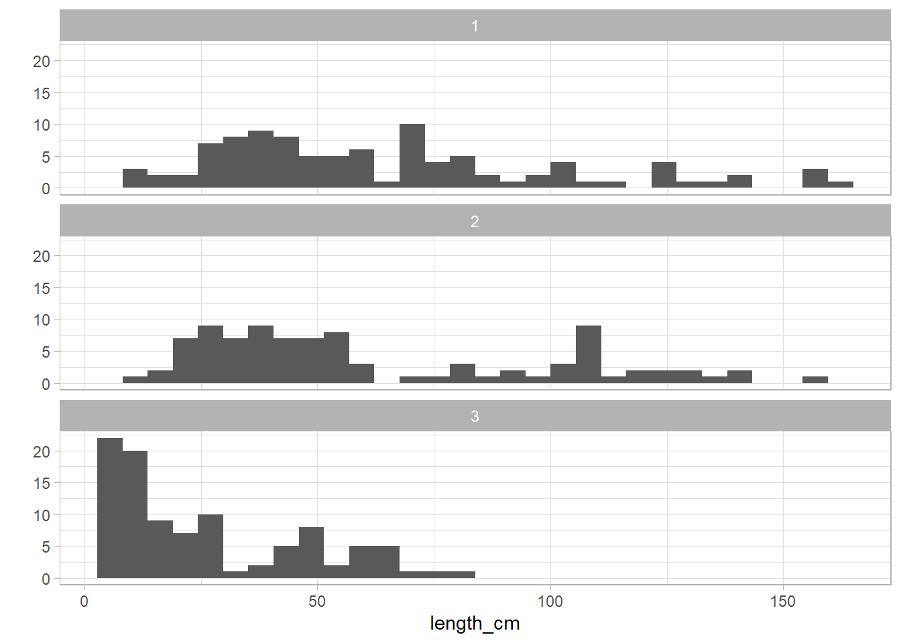

Analysis Phytophthora spp. survey
Daniel Cerritos
4/24/2020
Last updated: 2020-10-02
Checks: 7 0
Knit directory: phytophthora/
This reproducible R Markdown analysis was created with workflowr (version 1.6.2). The Checks tab describes the reproducibility checks that were applied when the results were created. The Past versions tab lists the development history.
Great! Since the R Markdown file has been committed to the Git repository, you know the exact version of the code that produced these results.
Great job! The global environment was empty. Objects defined in the global environment can affect the analysis in your R Markdown file in unknown ways. For reproduciblity it’s best to always run the code in an empty environment.
The command set.seed(20200422) was run prior to running the code in the R Markdown file. Setting a seed ensures that any results that rely on randomness, e.g. subsampling or permutations, are reproducible.
Great job! Recording the operating system, R version, and package versions is critical for reproducibility.
Nice! There were no cached chunks for this analysis, so you can be confident that you successfully produced the results during this run.
Great job! Using relative paths to the files within your workflowr project makes it easier to run your code on other machines.
Great! You are using Git for version control. Tracking code development and connecting the code version to the results is critical for reproducibility.
The results in this page were generated with repository version a8f044e. See the Past versions tab to see a history of the changes made to the R Markdown and HTML files.
Note that you need to be careful to ensure that all relevant files for the analysis have been committed to Git prior to generating the results (you can use wflow_publish or wflow_git_commit). workflowr only checks the R Markdown file, but you know if there are other scripts or data files that it depends on. Below is the status of the Git repository when the results were generated:
Ignored files:
Ignored: .Rproj.user/
Ignored: analysis/figure/
Untracked files:
Untracked: data/~$2018 soypocalypse.xlsx
Untracked: output/results/tables for manuscript/
Note that any generated files, e.g. HTML, png, CSS, etc., are not included in this status report because it is ok for generated content to have uncommitted changes.
These are the previous versions of the repository in which changes were made to the R Markdown (analysis/02_analysis_phytophtora-spp-survey.Rmd) and HTML (docs/02_analysis_phytophtora-spp-survey.html) files. If you’ve configured a remote Git repository (see ?wflow_git_remote), click on the hyperlinks in the table below to view the files as they were in that past version.
| File | Version | Author | Date | Message |
|---|---|---|---|---|
| Rmd | a8f044e | Daniel Guillermo Cerritos | 2020-10-02 | wflow_publish(“analysis/02_analysis_phytophtora-spp-survey.Rmd”) |
| Rmd | f3943e1 | Daniel Guillermo Cerritos | 2020-10-02 | change aggressiveness data to SI units |
| Rmd | e4e3929 | Daniel Guillermo Cerritos | 2020-10-02 | organize analysis |
| Rmd | 2d0c08a | Daniel Guillermo Cerritos | 2020-10-02 | update analysis |
| Rmd | 8bbdabb | Daniel Guillermo Cerritos | 2020-09-14 | santiago’s comments: table 1 and corr with EC50s |
| Rmd | f516113 | Daniel Guillermo Cerritos | 2020-09-02 | diversity indexes |
| html | 42b8ee7 | Daniel Guillermo Cerritos | 2020-08-31 | Build site. |
| Rmd | f426b6f | Daniel Guillermo Cerritos | 2020-08-31 | wflow_publish(“analysis/02_analysis_phytophtora-spp-survey.Rmd”) |
| Rmd | 1774ef8 | Daniel Guillermo Cerritos | 2020-08-31 | correct data for figure 1 (map) |
| Rmd | aff28d8 | Daniel Guillermo Cerritos | 2020-08-31 | update sample collection and identification section |
| html | b98ba23 | Daniel Guillermo Cerritos | 2020-08-26 | Build site. |
| Rmd | 517ee2b | Daniel Guillermo Cerritos | 2020-08-26 | wflow_publish(“analysis/02_analysis_phytophtora-spp-survey.Rmd”) |
| Rmd | a85d734 | Daniel Guillermo Cerritos | 2020-08-26 | save EC50 results with IDs, species and county |
| Rmd | f1f0133 | Daniel Guillermo Cerritos | 2020-08-26 | anlysis by species aggressiveness |
| Rmd | 307d057 | Daniel Guillermo Cerritos | 2020-08-24 | update tables and save data |
| html | 85e6a74 | Daniel Guillermo Cerritos | 2020-08-19 | Build site. |
| Rmd | 6950c77 | Daniel Guillermo Cerritos | 2020-08-19 | subset aggressiveness data by species for analysis |
| Rmd | 66fe832 | Daniel Guillermo Cerritos | 2020-08-19 | update indentification of isolates section |
| Rmd | 3eab0df | Daniel Guillermo Cerritos | 2020-08-18 | add analysis by species |
| Rmd | 251c9d1 | Daniel Guillermo Cerritos | 2020-08-18 | finish plots |
| Rmd | 1fb54f0 | Daniel Guillermo Cerritos | 2020-08-13 | tables and figures, Santiago suggestions |
| Rmd | 2e9da29 | Daniel Guillermo Cerritos | 2020-07-20 | modify plots |
| Rmd | 1873219 | Daniel Guillermo Cerritos | 2020-07-20 | save ouput |
| Rmd | e4da5e3 | Daniel Guillermo Cerritos | 2020-07-14 | comments for changes in sample collection section |
| html | a43f5ee | Daniel Guillermo Cerritos | 2020-07-08 | Build site. |
| Rmd | 0de4513 | Daniel Guillermo Cerritos | 2020-07-08 | figures size |
| Rmd | 9f07136 | Daniel Guillermo Cerritos | 2020-07-07 | exploratory temperature data |
| Rmd | d2b78bb | Daniel Guillermo Cerritos | 2020-07-07 | add temperature data |
| Rmd | 7f247ab | Daniel Guillermo Cerritos | 2020-07-07 | clean agg temperature data and make graph for analysis .Rmd file |
| Rmd | 5834830 | Daniel Guillermo Cerritos | 2020-07-04 | change fig 1 colors |
| html | c06b05d | Daniel Guillermo Cerritos | 2020-07-03 | Build site. |
| Rmd | 7548bc0 | Daniel Guillermo Cerritos | 2020-07-03 | eliminate some tables for exp analysis |
| html | 0145705 | Daniel Guillermo Cerritos | 2020-07-03 | Build site. |
| html | 1bf57e3 | Daniel Guillermo Cerritos | 2020-07-03 | Build site. |
| Rmd | 8029b56 | Daniel Guillermo Cerritos | 2020-07-03 | workflowr::wflow_publish(“analysis/02_analysis_phytophtora-spp-survey.Rmd”) |
| Rmd | 90b765c | Daniel Guillermo Cerritos | 2020-07-03 | update figures colors and save EC50s results |
| html | 64ce208 | Daniel Guillermo Cerritos | 2020-07-02 | Build site. |
| html | cbc77b4 | Daniel Guillermo Cerritos | 2020-07-02 | Build site. |
| html | 9ca939b | Daniel Guillermo Cerritos | 2020-07-02 | Build site. |
| html | 72bac52 | Daniel Guillermo Cerritos | 2020-07-02 | Build site. |
| html | 591c5c7 | Daniel Guillermo Cerritos | 2020-07-02 | update website |
| Rmd | 3921e41 | Daniel Guillermo Cerritos | 2020-07-02 | final figures |
| Rmd | 74aaa15 | Daniel Guillermo Cerritos | 2020-07-01 | change color of figures to same palette |
| Rmd | 1b2b094 | Daniel Guillermo Cerritos | 2020-07-01 | finish figure 6 |
| Rmd | 59bb92d | Daniel Guillermo Cerritos | 2020-06-29 | correlations |
| Rmd | f621f59 | Daniel Guillermo Cerritos | 2020-06-29 | save aggressiveness means resuslts |
| Rmd | de74cdf | Daniel Guillermo Cerritos | 2020-06-27 | new aggressiveness plots |
| Rmd | 9372aa7 | Daniel Guillermo Cerritos | 2020-06-09 | figure differences with isolates |
| Rmd | eddafb9 | Daniel Guillermo Cerritos | 2020-06-02 | continue with aggressiveness analysis, no nesting |
| Rmd | ddadb27 | Daniel Guillermo Cerritos | 2020-06-02 | finish figures 1-3 |
| Rmd | 29a2402 | Daniel Guillermo Cerritos | 2020-06-01 | use scales package |
| Rmd | a60f2e9 | Daniel Guillermo Cerritos | 2020-06-01 | finish identified species |
| Rmd | dfbd626 | Daniel Guillermo Cerritos | 2020-06-01 | correct code order for map |
| Rmd | a77b6fa | Daniel Guillermo Cerritos | 2020-06-01 | correct library |
| Rmd | 32f4a2f | Daniel Guillermo Cerritos | 2020-06-01 | elimante output files not needed |
| Rmd | 1fef028 | Daniel Guillermo Cerritos | 2020-06-01 | finish map |
| Rmd | 2891941 | Daniel Guillermo Cerritos | 2020-05-31 | finish FS analysis, comeback for problem with ethaboxam hormetic isolates |
| Rmd | 79b3ab3 | Daniel Guillermo Cerritos | 2020-05-30 | continue FS analysis |
| Rmd | 19f2eef | Daniel Guillermo Cerritos | 2020-05-30 | continue FS analysis |
| Rmd | ed20b5b | Daniel Guillermo Cerritos | 2020-05-30 | cleand FS data |
| Rmd | fbb6ef2 | Daniel Guillermo Cerritos | 2020-05-30 | update: fit hormetic models |
| Rmd | df3a70a | Daniel Guillermo Cerritos | 2020-05-29 | eliminate negative length mm values |
| Rmd | a56b4d7 | Daniel Guillermo Cerritos | 2020-05-29 | fit hormetic models |
| Rmd | f52841a | Daniel Guillermo Cerritos | 2020-05-28 | LL4 with pool data |
| Rmd | c84afc2 | Daniel Guillermo Cerritos | 2020-05-28 | packages |
| Rmd | 96bec37 | Daniel Guillermo Cerritos | 2020-05-28 | model selection AIC and lack of fit |
| Rmd | 892c9af | Daniel Guillermo Cerritos | 2020-05-28 | organize chuncks |
| Rmd | afb0d11 | Daniel Guillermo Cerritos | 2020-05-26 | add comments FS analysis |
| Rmd | 91aa132 | Daniel Guillermo Cerritos | 2020-05-26 | clean code |
| Rmd | 80cae66 | Daniel Guillermo Cerritos | 2020-05-26 | eliminate prueba in FS analysis |
| Rmd | 7a52523 | Daniel Guillermo Cerritos | 2020-05-26 | correct filtering for no EC50 and hormetic effect |
| Rmd | b62cab1 | Daniel Guillermo Cerritos | 2020-05-24 | comments FS |
| Rmd | 803db09 | Daniel Guillermo Cerritos | 2020-05-24 | FS comments |
| Rmd | 4699f0b | Daniel Guillermo Cerritos | 2020-05-24 | correct filter FS data |
| Rmd | e10fb69 | Daniel Guillermo Cerritos | 2020-05-24 | correct model selection FS |
| Rmd | cafef6e | Daniel Guillermo Cerritos | 2020-05-24 | select LL.3 model |
| Rmd | 3f0bbcc | Daniel Guillermo Cerritos | 2020-05-24 | model selection LL.3 or LL.4 |
| Rmd | bad384a | Daniel Guillermo Cerritos | 2020-05-17 | fit LL3 and LL4 models to FS data |
| Rmd | ed06e2e | Daniel Guillermo Cerritos | 2020-05-16 | calculate relative growth |
| Rmd | ba8b003 | Daniel Guillermo Cerritos | 2020-05-16 | start Fungicide S analysis |
| Rmd | 46bf9ab | Daniel Guillermo Cerritos | 2020-05-15 | add first aggressiveness analysis |
| Rmd | 982abda | Daniel Guillermo Cerritos | 2020-05-03 | exploratory plots aggressivenesss |
| Rmd | d7512ae | Daniel Guillermo Cerritos | 2020-05-01 | pathotype figures |
| Rmd | 9f825be | Daniel Guillermo Cerritos | 2020-05-01 | pathotype data |
| Rmd | 8731e6e | Daniel Guillermo Cerritos | 2020-04-27 | clean map 2 code |
| Rmd | 2fb3d38 | Daniel Guillermo Cerritos | 2020-04-27 | map 2 isolates collected |
| Rmd | 97751d7 | Daniel Guillermo Cerritos | 2020-04-27 | isolates data base to .csv |
| Rmd | d39ecc3 | Daniel Guillermo Cerritos | 2020-04-27 | add plant samples data to map |
| Rmd | affe5f0 | Daniel Guillermo Cerritos | 2020-04-26 | labels to samples map |
| Rmd | bc200c7 | Daniel Guillermo Cerritos | 2020-04-26 | sample collection map |
| Rmd | 12adede | Daniel Guillermo Cerritos | 2020-04-24 | start analysis |
# install.packages("pacman")
# install.packages(c("googleway", "ggrepel","ggspatial", "libwgeom", "sf", "rnaturalearth",
# "rnaturalearthdata","hagis", "corrplot", "Hmisc", "drc", "rgeos", "scales"))
pacman::p_load(tidyverse, here, sf, maps, rnaturalearth, rnaturalearthdata,
cowplot, hagis, pander, lmerTest, ggResidpanel, emmeans, broom,
Hmisc, corrplot, drc, scales, broom)Import data
all_data <- list.files(here("output", "clean_data"), full.names = TRUE)
# samples collection
soil_samples <- read_csv(all_data[9])
plant_samples <- read_csv(all_data[8])
# identification of isolates
isolates_recovered <- read_csv(here("data", "all-isolates-in-data-base.csv"))
# pathotype
sojae <- read_csv(all_data[7])
sansomeana <- read_csv(all_data[6])
#aggressiveness
dry_weigth <- read_csv(all_data[1])
area_length <- read_csv(all_data[2])
agg_temperature <- read_csv(all_data[3])
# fungicide sensitivity
fungicide <- read.csv(all_data[5])Sample collection
# 2016-2017
soil_samples %>%
group_by(year) %>%
count() %>%
pander| year | n |
|---|---|
| 2016 | 28 |
| 2017 | 22 |
soil_samples$county %>%
n_distinct() [1] 26# 2018
plant_samples$PC_ID %>%
n_distinct()[1] 51plant_samples$County %>%
n_distinct()[1] 19county_soil <- soil_samples %>%
dplyr::select(county)
county_plant <- plant_samples %>%
dplyr::select(county = County)
rbind(county_soil, county_plant) %>%
n_distinct()[1] 40# subset county data
world <- ne_countries(scale = "medium", returnclass = "sf")
states <- st_as_sf(map("state", plot = FALSE, fill = TRUE))
counties <- st_as_sf(map("county", plot = FALSE, fill = TRUE))
counties <- subset(counties, grepl("illinois", counties$ID))
# convert to sf object
map_soil <- soil_samples %>%
filter(!sample_id == "16PR012") %>% # not from IL
dplyr::select(year, long, lat) %>%
filter(!is.na(long))
map_soil <- st_as_sf(map_soil, coords = c("long", "lat"),
crs = 4326, agr = "constant")
# change continuous data (plant samples) into categorical
plant_samples_county <- plant_samples %>%
group_by(PC_ID, County) %>%
count() %>%
filter(!is.na(County)) %>%
dplyr::select(county = County) %>%
group_by(county) %>%
count() Adding missing grouping variables: `PC_ID`map_plant <- plant_samples_county %>%
mutate(samples_categ = case_when(
n <= 5 ~ "1-5",
n >= 6 & n <= 10 ~ "6-10",
n >= 11 & n <= 15 ~ "11-15",
))
# add counties coordinates to plant samples data
counties <- counties %>%
separate(ID, into = c("state", "county"), sep = ",")
map_plant$county <- tolower(map_plant$county)
map_plant <- left_join(counties, map_plant, by = "county")
# as factor for plotting
map_plant$samples_categ <- as.factor(map_plant$samples_categ)
map_plant$samples_categ <- factor(map_plant$samples_categ,
levels = c("1-5",
"6-10",
"11-15"))
map_soil$year <- as.factor(map_soil$year)
map_plant <- map_plant %>%
filter(!is.na(samples_categ))Figure 1
# samples collection map
(figure_one <- ggplot() +
geom_sf(data = counties, fill = NA) +
geom_sf(data = map_plant, aes(fill = samples_categ) , alpha = 0.7) +
geom_sf(data = map_soil, aes(shape = year), size = 2) +
coord_sf(xlim = c(-92, -87), ylim = c(36.5, 43), expand = FALSE) +
scale_fill_manual(values = c("#bdd7e7", "#3182bd", "#08519c"),
name = "Plant samples") +
scale_shape_discrete(name = "Year") +
theme_map()
)
# ggsave("figure1.tiff", plot = figure_one, dpi = 300, path = here("docs", "figure"))Identification of isolates
Phytophthora spp isolates
sequenced_isolates <- isolates_recovered %>%
filter(identification == "sequence")
phytophthora_isolates <- sequenced_isolates %>%
filter(species %in% c("Phytophthora sansomeana", "Phytophthora sojae"))
phytophthora_isolates %>%
group_by(year) %>%
count()# A tibble: 3 x 2
# Groups: year [3]
year n
<dbl> <int>
1 2016 7
2 2017 8
3 2018 16phytophthora_isolates %>%
dplyr::select(county) %>%
n_distinct()[1] 12# soil samples
phytophthora_isolates %>%
filter(!year == 2018) %>%
dplyr::select(sample_id) %>%
n_distinct() [1] 8# plant samples
phytophthora_isolates %>%
filter(year == 2018) %>%
dplyr::select(sample_id) %>%
n_distinct() [1] 8phytophthora_isolates %>%
filter(year == 2018) %>%
group_by(source) %>%
count()# A tibble: 2 x 2
# Groups: source [2]
source n
<chr> <int>
1 kurt varland 5
2 plant clinic 11phytophthora_table <- phytophthora_isolates %>%
dplyr::select(isolate_id,species, county, year) %>%
arrange(isolate_id)
phytophthora_table %>% pander()| isolate_id | species | county | year |
|---|---|---|---|
| 16PR009.1 | Phytophthora sojae | Champaign | 2016 |
| 16PR009.2 | Phytophthora sojae | Champaign | 2016 |
| 16PR018B.1 | Phytophthora sansomeana | Kankakee | 2016 |
| 16PR024C.1 | Phytophthora sansomeana | Grundy | 2016 |
| 16PR024C.2 | Phytophthora sansomeana | Grundy | 2016 |
| 16PR027C.1 | Phytophthora sojae | Livingston | 2016 |
| 16PR027C.2 | Phytophthora sojae | Livingston | 2016 |
| 17PR006L.1 | Phytophthora sansomeana | Macon | 2017 |
| 17PR009A.1 | Phytophthora sojae | Franklin | 2017 |
| 17PR009A.2 | Phytophthora sojae | Franklin | 2017 |
| 17PR013G.3 | Phytophthora sojae | Crawford | 2017 |
| 17PR018F.1 | Phytophthora sojae | Boone | 2017 |
| 17PR018F.2 | Phytophthora sojae | Boone | 2017 |
| 17PR018H.1 | Phytophthora sojae | Boone | 2017 |
| 17PR018J.3 | Phytophthora sojae | Boone | 2017 |
| 18PR001 | Phytophthora sojae | Vermilion | 2018 |
| 18PR003 | Phytophthora sansomeana | Champaign | 2018 |
| 18PR004 | Phytophthora sansomeana | Champaign | 2018 |
| 18PR005 | Phytophthora sansomeana | Champaign | 2018 |
| 18PR006 | Phytophthora sojae | Massac | 2018 |
| 18PR007 | Phytophthora sojae | Massac | 2018 |
| 18PR008 | Phytophthora sojae | Knox | 2018 |
| 18PR009 | Phytophthora sojae | Knox | 2018 |
| 18PR010 | Phytophthora sojae | Knox | 2018 |
| 18PR011 | Phytophthora sojae | Jefferson | 2018 |
| 18PR012 | Phytophthora sojae | Jefferson | 2018 |
| 18PR013 | Phytophthora sojae | Knox | 2018 |
| 18PR014 | Phytophthora sojae | Jefferson | 2018 |
| 18PR015 | Phytophthora sojae | Jefferson | 2018 |
| 18PR016 | Phytophthora sojae | Knox | 2018 |
| 18PR017 | Phytophthora sojae | Jefferson | 2018 |
All isolates
isolates_recovered$county %>%
n_distinct()[1] 32isolates_recovered %>%
group_by(identification) %>%
count() %>%
pander()| identification | n |
|---|---|
| morpholgy | 48 |
| PCR | 37 |
| sequence | 97 |
sequenced_isolates %>%
group_by(year) %>%
count() %>%
mutate(percentage = (n/97)) %>%
pander()| year | n | percentage |
|---|---|---|
| 2016 | 25 | 0.2577 |
| 2017 | 55 | 0.567 |
| 2018 | 17 | 0.1753 |
sequenced_isolates$county %>%
n_distinct()[1] 24isolates_species <- sequenced_isolates %>%
dplyr::select(species) %>%
group_by(species) %>%
count() %>%
mutate(genus = case_when(
grepl("Phyto", species) ~ "Phytophthora spp.",
grepl("Pyth", species) ~"Pythium spp.")) %>%
mutate(percentage = (n/97))
isolates_species %>%
group_by(genus) %>%
count() %>%
mutate(percentage = (n/97)) %>%
pander()| genus | n | percentage |
|---|---|---|
| Phytophthora spp. | 32 | 0.3299 |
| Pythium spp. | 65 | 0.6701 |
isolates_species %>%
ggplot(aes(x = reorder(species, percentage), y = percentage, fill = genus)) +
geom_col(alpha = 0.6) +
coord_flip() +
labs(x = "", y = "Percent isolates recovered",
title = "Species indentified from Illinois ") +
theme_minimal_vgrid() +
theme(legend.position = "none",
axis.text.y = element_text(face = "italic")) +
scale_fill_manual(values = c("#F8766D", "#BEBEBE")) +
scale_y_continuous(expand = expansion(mult = c(0, 0.05)),
labels = percent_format()) 
Was phytophthora and pythium isolated from same sample?
sequenced_isolates %>%
group_by(sample_id, species) %>%
count() %>%
arrange(n) %>%
mutate(genus = case_when(
grepl("Phyto", species) ~ "Phytophthora spp.",
grepl("Pyth", species) ~"Pythium spp.")) %>%
ggplot(aes(x = sample_id, y = n, fill = genus)) +
geom_col(alpha = 0.7) +
coord_flip() +
theme_minimal_vgrid() +
scale_fill_manual(values = c("#F8766D", "#BEBEBE")) +
scale_y_continuous(expand = expansion(mult = c(0, 0.05)))
sequenced_isolates %>%
filter(sample_id %in% c("17PR013", "17PR009")) %>%
group_by(sample_id, species, county) %>%
count()# A tibble: 6 x 4
# Groups: sample_id, species, county [6]
sample_id species county n
<chr> <chr> <chr> <int>
1 17PR009 Phytophthora sojae Franklin 2
2 17PR009 Pythium acanthophoron Franklin 2
3 17PR009 Pythium ultimum var. ultimum Franklin 1
4 17PR013 Phytophthora sojae Crawford 1
5 17PR013 Pythium torulosum Crawford 1
6 17PR013 Pythium ultimum var. ultimum Crawford 7Virulence assays: Pathotype determination
Phytophthora sojae
# two susceptible controls
sojae_control <- sojae %>%
filter(differential == "Williams") %>%
group_by(isolate_number, isolate_id, isolate_name, county, differential, gene) %>%
summarise(dead = sum(dead),
total = sum(total))
sojae <- sojae %>%
filter(!differential == "Williams")
sojae <- bind_rows(sojae_control, sojae)
sojae <- sojae %>%
mutate(percent.susceptible = (dead/total)*100)
hagis_args <- list(
x = sojae,
cutoff = 75,
control = "rps",
sample = "isolate_number",
gene = "gene",
perc_susc = "percent.susceptible"
)
# effective Rps
sojae_rps <- do.call(summarize_gene, hagis_args)
sojae_rps %>% pander()| gene | N_virulent_isolates | percent_pathogenic |
|---|---|---|
| rps | 24 | 100 |
| 1a | 8 | 33.33 |
| 1b | 24 | 100 |
| 1c | 8 | 33.33 |
| 1k | 15 | 62.5 |
| 6 | 2 | 8.333 |
| 7 | 19 | 79.17 |
| 2 | 7 | 29.17 |
| 3a | 11 | 45.83 |
| 3b | 6 | 25 |
| 3c | 15 | 62.5 |
| 4 | 5 | 20.83 |
| 5 | 24 | 100 |
complexities <- do.call(calculate_complexities, hagis_args)
# mean complexity
pander(summary(complexities))| Mean | SD | SE |
|---|---|---|
| 6 | 1.719 | 0.351 |
Figure 2
effective_rps <- sojae_rps %>%
mutate(percent_pathogenic = percent_pathogenic/100) %>% # to use the scales format
ggplot(aes(x = gene, y = percent_pathogenic)) +
geom_col(alpha = 0.6, fill = "#F37B59") +
labs(x = "Rps gene",
y = "Percent pathogenic") +
scale_y_continuous(
expand = expansion(mult = c(0, 0.05)),
labels = percent_format()) +
theme_minimal_hgrid()
# Fig 3B
complexity_percent <- complexities$grouped_complexities %>%
mutate(percent = (frequency/21))
complexity_percent$complexity <- as.numeric(complexity_percent$complexity)
mean_complexity <- complexity_percent %>%
ggplot(aes(x = complexity, y = percent)) +
geom_col(alpha = 0.6, fill = "#529EFF") +
geom_vline(xintercept = 6, linetype="dashed", size = 1) +
labs(x = "Complexity",
y = "Percent Isolates") +
scale_y_continuous(expand = expansion(mult = c(0, 0.05)),
labels = percent_format()) +
scale_x_continuous(limits = c(1, 12), breaks = 1:12) +
theme_minimal_hgrid()
(figure_two <- plot_grid(effective_rps, mean_complexity, labels = "AUTO", ncol = 1))
# ggsave("figure2.tiff", plot = figure_two, dpi = 300, path = here("docs", "figure"), width = 4.5, height = 5.7)# diversity indexes
diversity <- do.call(calculate_diversities, hagis_args)
diversity %>% pander()| Simple | Gleason | Shannon | Simpson | Evenness |
|---|---|---|---|---|
| 0.6667 | 4.72 | 2.636 | 0.9167 | 0.9509 |
Table 1
pathotypes_by_isolate <- diversity$individual_pathotypes %>%
rename(isolate_number = Sample) %>%
arrange(isolate_number)
isolates_ids <- phytophthora_table %>%
filter(species == "Phytophthora sojae") %>%
arrange(isolate_id)
pahtotypes_isolate <- bind_cols(isolates_ids, pathotypes_by_isolate) %>%
dplyr::select(-isolate_number)
## add sansomeana isolates to table 1
sansomeana_table_one <- phytophthora_table %>%
filter(species == "Phytophthora sansomeana") %>%
mutate(Pathotype = "")
table_one <- bind_rows(sansomeana_table_one, pahtotypes_isolate) %>%
arrange(species, year)
table_one %>% pander()| isolate_id | species | county | year |
|---|---|---|---|
| 16PR018B.1 | Phytophthora sansomeana | Kankakee | 2016 |
| 16PR024C.1 | Phytophthora sansomeana | Grundy | 2016 |
| 16PR024C.2 | Phytophthora sansomeana | Grundy | 2016 |
| 17PR006L.1 | Phytophthora sansomeana | Macon | 2017 |
| 18PR003 | Phytophthora sansomeana | Champaign | 2018 |
| 18PR004 | Phytophthora sansomeana | Champaign | 2018 |
| 18PR005 | Phytophthora sansomeana | Champaign | 2018 |
| 16PR009.1 | Phytophthora sojae | Champaign | 2016 |
| 16PR009.2 | Phytophthora sojae | Champaign | 2016 |
| 16PR027C.1 | Phytophthora sojae | Livingston | 2016 |
| 16PR027C.2 | Phytophthora sojae | Livingston | 2016 |
| 17PR009A.1 | Phytophthora sojae | Franklin | 2017 |
| 17PR009A.2 | Phytophthora sojae | Franklin | 2017 |
| 17PR013G.3 | Phytophthora sojae | Crawford | 2017 |
| 17PR018F.1 | Phytophthora sojae | Boone | 2017 |
| 17PR018F.2 | Phytophthora sojae | Boone | 2017 |
| 17PR018H.1 | Phytophthora sojae | Boone | 2017 |
| 17PR018J.3 | Phytophthora sojae | Boone | 2017 |
| 18PR001 | Phytophthora sojae | Vermilion | 2018 |
| 18PR006 | Phytophthora sojae | Massac | 2018 |
| 18PR007 | Phytophthora sojae | Massac | 2018 |
| 18PR008 | Phytophthora sojae | Knox | 2018 |
| 18PR009 | Phytophthora sojae | Knox | 2018 |
| 18PR010 | Phytophthora sojae | Knox | 2018 |
| 18PR011 | Phytophthora sojae | Jefferson | 2018 |
| 18PR012 | Phytophthora sojae | Jefferson | 2018 |
| 18PR013 | Phytophthora sojae | Knox | 2018 |
| 18PR014 | Phytophthora sojae | Jefferson | 2018 |
| 18PR015 | Phytophthora sojae | Jefferson | 2018 |
| 18PR016 | Phytophthora sojae | Knox | 2018 |
| 18PR017 | Phytophthora sojae | Jefferson | 2018 |
| Pathotype |
1b, 7, 2, 3b, 3c, 5
1b, 7, 2, 3a, 3b, 3c, 5
1a, 1b, 1c, 1k, 3c, 4, 5
1a, 1b, 1c, 1k, 3c, 4, 5
1b, 6, 7, 3c, 4, 5
1b, 6, 7, 3c, 4, 5 1a, 1b, 1c, 1k, 7, 3a, 3b, 3c, 5
1a, 1b, 1c, 1k, 7, 5
1b, 1k, 7, 5
1a, 1b, 1c, 1k, 7, 5
1b, 1k, 7, 5 1a, 1b, 1c, 1k, 7, 2, 3b, 5
1a, 1b, 1c, 1k, 2, 3a, 3c, 5
1a, 1b, 1c, 1k, 7, 2, 3a, 5
1b, 7, 3a, 3c, 5
1b, 7, 3a, 3c, 5
1b, 7, 3a, 5
1b, 1k, 7, 5
1b, 1k, 7, 5
1b, 7, 3a, 3c, 5
1b, 1k, 3c, 5 1b, 1k, 7, 2, 3a, 3b, 3c, 5
1b, 3a, 3c, 5 1b, 1k, 7, 2, 3a, 3b, 3c, 4, 5
# write_csv(table_one_modified, path = here("output", "results", "02_identification_phytophthora-isolates_table-1.csv"))Table 2
# pathotypes
pathotype_frequency <- diversity$table_of_pathotypes %>%
mutate(Percentage = round((Frequency/16)*100))
pathotype_frequency <- pathotype_frequency %>%
arrange(Frequency) %>%
dplyr::select(Pathotype, Frequency, Percentage)
# write_csv(pathotype_frequency, here("output", "results", "02_pathotype-psojae_frequency-table.csv"))
pathotype_frequency %>% pander()| Pathotype | Frequency | Percentage |
|---|---|---|
| 1a, 1b, 1c, 1k, 2, 3a, 3c, 5 | 1 | 6 |
| 1a, 1b, 1c, 1k, 7, 2, 3a, 5 | 1 | 6 |
| 1a, 1b, 1c, 1k, 7, 2, 3b, 5 | 1 | 6 |
| 1a, 1b, 1c, 1k, 7, 3a, 3b, 3c, 5 | 1 | 6 |
| 1b, 1k, 3c, 5 | 1 | 6 |
| 1b, 1k, 7, 2, 3a, 3b, 3c, 4, 5 | 1 | 6 |
| 1b, 1k, 7, 2, 3a, 3b, 3c, 5 | 1 | 6 |
| 1b, 3a, 3c, 5 | 1 | 6 |
| 1b, 7, 2, 3a, 3b, 3c, 5 | 1 | 6 |
| 1b, 7, 2, 3b, 3c, 5 | 1 | 6 |
| 1b, 7, 3a, 5 | 1 | 6 |
| 1a, 1b, 1c, 1k, 3c, 4, 5 | 2 | 12 |
| 1a, 1b, 1c, 1k, 7, 5 | 2 | 12 |
| 1b, 6, 7, 3c, 4, 5 | 2 | 12 |
| 1b, 7, 3a, 3c, 5 | 3 | 19 |
| 1b, 1k, 7, 5 | 4 | 25 |
Phytophthora sansomeana
sansomeana <- sansomeana %>%
mutate(percent.susceptible = (dead/total)*100)
# having trouble to use hagis package for sansomeana data
# calculate manually
sansomeana_summ <- sansomeana %>%
group_by(isolate_id, differential, gene) %>%
summarise(percent_susceptible = mean(percent.susceptible))`summarise()` regrouping output by 'isolate_id', 'differential' (override with `.groups` argument)sansomeana_summ %>%
filter(percent_susceptible > 75)# A tibble: 4 x 4
# Groups: isolate_id, differential [4]
isolate_id differential gene percent_susceptible
<chr> <chr> <chr> <dbl>
1 16PR018B.1 L83-570 3a 80
2 16PR018B.1 Williams 79 1c 80
3 16PR024C.2 L83-570 3a 87.5
4 17PR006L.13 L83-570 3a 80 # combine pathtoype and complexity results
isolates_complexity <- complexities$indvidual_complexities %>%
rename(isolate_number = sample, Complexity = N_samp)
isolates_pathotypes <- diversity$individual_pathotypes %>%
rename(isolate_number = Sample)
isolates_complexity$isolate_number <- as.numeric(isolates_complexity$isolate_number)
sojae_all <- left_join(isolates_complexity, isolates_pathotypes, by = "isolate_number")
add_isolate_id <- sojae[1:24, ]
sojae_pathotype <- left_join(sojae_all, add_isolate_id, by = "isolate_number") %>%
dplyr::select(isolate_number, isolate_id, Complexity, Pathotype)
# write_csv(sojae_pathotype, here("output", "results", "02_pathotype-psojae_results.csv"))Aggressiveness
# some pots had two images in experiment 1 because they did not fit
area_length <- area_length %>%
group_by(experiment, pot) %>%
summarise(length_in = mean(length_in),
area_in.2 = mean(area_in.2))`summarise()` regrouping output by 'experiment' (override with `.groups` argument)aggressiveness <- left_join(dry_weigth, area_length,
by = c("experiment", "pot"))
# results are by pot, divide by germination to get mean by seedling
aggressiveness <- aggressiveness %>%
mutate(shoot_mg = shoot.mg/germination,
root_mg = root.mg/germination,
length_in = length_in/germination,
area_in.2 = area_in.2/germination) %>%
dplyr::select(-c(emergence, root.mg, shoot.mg))
# convert to SI units
aggressiveness <- aggressiveness %>%
mutate(length_cm = length_in*2.54,
area_cm.2 = area_in.2*6.4516)
# write_csv(aggressiveness, here("output", "transform_data", "02_aggressiveness_transform.csv"))Exploratory plots
agg_temperature <- agg_temperature %>%
mutate(room_temperature = (room_temperature-32) * 5/9) # transform to Celsius
agg_temperature %>%
group_by(experiment) %>%
summarise(min = min(room_temperature),
max = max(room_temperature),
mean = mean(room_temperature)) %>%
pander()| experiment | min | max | mean |
|---|---|---|---|
| 1 | 21.89 | 28.61 | 25.32 |
| 2 | 22.83 | 29.61 | 24.78 |
| 3 | 20.89 | 24.56 | 22.67 |
agg_temperature$time <- as.character(agg_temperature$time)
# filter to the hours they have in common
agg_temperature_filtered <- agg_temperature %>%
filter(time %in% c("00:15:00", "08:15:00", "16:15:00"))
agg_temperature_filtered %>%
ggplot(aes(x = date, y = room_temperature, color = as.factor(experiment))) +
geom_line(group = 1) +
facet_grid(~ as.factor(experiment), scales = "free_x") +
theme_minimal() +
theme(axis.text.x = element_text(angle = 45, hjust = 1),
legend.position = "none") 
aggressiveness$experiment <- as.factor(aggressiveness$experiment)
aggressiveness$isolate <- as.factor(aggressiveness$isolate)
aggressiveness$species <- as.factor(aggressiveness$species)
exp_plot <- function(y) {
ggplot(data = aggressiveness, aes(x = experiment, y = .data[[y]])) +
geom_boxplot() +
theme_minimal() +
labs(x = "",
y = y) +
theme(legend.position = "none")
}
by_exp_shoot <- exp_plot("shoot_mg")
by_exp_dry <- exp_plot("root_mg")
by_exp_length <- exp_plot("length_cm")
by_exp_area <- exp_plot("area_cm.2")
plot_grid(by_exp_shoot, by_exp_dry, by_exp_length, by_exp_area)
dis_shoot <- qplot(shoot_mg, data = aggressiveness) +
theme_minimal()
dis_dry <- qplot(root_mg, data = aggressiveness) +
theme_minimal()
dis_length <- qplot(length_cm, data = aggressiveness) +
theme_minimal() # skew to the left, some transformation needed
dis_area <- qplot(area_cm.2, data = aggressiveness) +
theme_minimal() # also skew
plot_grid(dis_shoot, dis_dry, dis_length, dis_area)
dis_length_log <- qplot(log(length_cm), data = aggressiveness) +
theme_minimal()
dis_area_log <- qplot(log(area_cm.2), data = aggressiveness) +
theme_minimal()
plot_grid(dis_length_log, dis_area_log) #improves with log transformation
Difference between species
# not nesting isolate:species, isolates coded in a way there is no needed
# same coefficient estimates and p values without nesting
# log transformation for normality and slight difference in variances
fm_root_length <- lmer(log(length_cm) ~ species + isolate + (1|experiment), data = aggressiveness)fixed-effect model matrix is rank deficient so dropping 3 columns / coefficientsresid_panel(fm_root_length ) # diagnostic plots look fine
anova(fm_root_length )Type III Analysis of Variance Table with Satterthwaite's method
Sum Sq Mean Sq NumDF DenDF F value Pr(>F)
species 12.687 4.2288 3 254.01 15.2707 3.638e-09 ***
isolate 22.764 0.7850 29 254.00 2.8346 6.339e-06 ***
---
Signif. codes: 0 '***' 0.001 '**' 0.01 '*' 0.05 '.' 0.1 ' ' 1emmeans(fm_root_length , ~ species, type = "response") %>% # back-transform estimates
cld.emmGrid()NOTE: A nesting structure was detected in the fitted model:
isolate %in% species species response SE df lower.CL upper.CL .group
Phytophthora sojae 28.8 10.7 2.01 5.88 141 1
Control None 63.4 25.9 2.96 17.12 235 2
Phytophthora sansomeana 78.8 29.6 2.11 16.97 366 2
Control Agar 84.7 35.5 3.29 23.77 302 2
Results are averaged over the levels of: isolate
Degrees-of-freedom method: kenward-roger
Confidence level used: 0.95
Intervals are back-transformed from the log scale
P value adjustment: tukey method for comparing a family of 4 estimates
Tests are performed on the log scale
significance level used: alpha = 0.05 fm_root_area <- lmer(log(area_cm.2) ~ species + isolate + (1|experiment), data = aggressiveness)fixed-effect model matrix is rank deficient so dropping 3 columns / coefficientsresid_panel(fm_root_area) # transformation also worked 
anova(fm_root_area)Type III Analysis of Variance Table with Satterthwaite's method
Sum Sq Mean Sq NumDF DenDF F value Pr(>F)
species 12.83 4.2768 3 254.01 16.0131 1.449e-09 ***
isolate 21.89 0.7548 29 254.00 2.8262 6.752e-06 ***
---
Signif. codes: 0 '***' 0.001 '**' 0.01 '*' 0.05 '.' 0.1 ' ' 1emmeans(fm_root_area, ~ species, type = "response") %>%
cld.emmGrid()NOTE: A nesting structure was detected in the fitted model:
isolate %in% species species response SE df lower.CL upper.CL .group
Phytophthora sojae 1.47 0.514 2.01 0.326 6.58 1
Control None 3.46 1.348 3.05 1.014 11.82 2
Phytophthora sansomeana 3.93 1.396 2.12 0.922 16.73 2
Control Agar 4.66 1.865 3.40 1.414 15.36 2
Results are averaged over the levels of: isolate
Degrees-of-freedom method: kenward-roger
Confidence level used: 0.95
Intervals are back-transformed from the log scale
P value adjustment: tukey method for comparing a family of 4 estimates
Tests are performed on the log scale
significance level used: alpha = 0.05 fm_root_dry <- lmer(root_mg ~ species + isolate + (1|experiment), data = aggressiveness)fixed-effect model matrix is rank deficient so dropping 3 columns / coefficientsresid_panel(fm_root_dry) 
anova(fm_root_dry)Type III Analysis of Variance Table with Satterthwaite's method
Sum Sq Mean Sq NumDF DenDF F value Pr(>F)
species 2553.3 851.10 3 262 21.5413 1.676e-12 ***
isolate 3095.1 106.73 29 262 2.7013 1.629e-05 ***
---
Signif. codes: 0 '***' 0.001 '**' 0.01 '*' 0.05 '.' 0.1 ' ' 1emmeans(fm_root_dry, ~ species) %>%
cld.emmGrid() NOTE: A nesting structure was detected in the fitted model:
isolate %in% species species emmean SE df lower.CL upper.CL .group
Phytophthora sojae 15.6 2.42 2.03 5.4 25.9 1
Control None 28.3 3.17 5.99 20.5 36.1 2
Phytophthora sansomeana 30.5 2.51 2.36 21.1 39.9 2
Control Agar 34.0 3.17 5.99 26.2 41.7 2
Results are averaged over the levels of: isolate
Degrees-of-freedom method: kenward-roger
Confidence level used: 0.95
P value adjustment: tukey method for comparing a family of 4 estimates
significance level used: alpha = 0.05 fm_shoot_dry <- lmer(shoot_mg ~ species + isolate + (1|experiment), data = aggressiveness)fixed-effect model matrix is rank deficient so dropping 3 columns / coefficientsresid_panel(fm_shoot_dry) 
anova(fm_shoot_dry)Type III Analysis of Variance Table with Satterthwaite's method
Sum Sq Mean Sq NumDF DenDF F value Pr(>F)
species 7171.1 2390.38 3 262 8.4322 2.275e-05 ***
isolate 13225.6 456.06 29 262 1.6088 0.02879 *
---
Signif. codes: 0 '***' 0.001 '**' 0.01 '*' 0.05 '.' 0.1 ' ' 1emmeans(fm_shoot_dry, ~ species) %>%
cld.emmGrid()NOTE: A nesting structure was detected in the fitted model:
isolate %in% species species emmean SE df lower.CL upper.CL .group
Phytophthora sojae 43.8 5.69 2.05 19.8 67.7 1
Control None 61.0 7.91 7.60 42.6 79.4 2
Phytophthora sansomeana 70.9 5.96 2.47 49.4 92.4 23
Control Agar 83.5 7.91 7.60 65.1 101.9 3
Results are averaged over the levels of: isolate
Degrees-of-freedom method: kenward-roger
Confidence level used: 0.95
P value adjustment: tukey method for comparing a family of 4 estimates
significance level used: alpha = 0.05 Results summary
# save means to see effect size
m_root_dry <- emmeans(fm_root_dry, ~ species) %>%
tidy() %>%
mutate(agg_parameter = "root dry",
relative_growth = (estimate/33.95000)*100) # relative growth compared to control
m_shoot_dry <- emmeans(fm_shoot_dry, ~ species) %>%
tidy() %>%
mutate(agg_parameter = "shoot dry",
relative_growth = (estimate/83.45671)*100)
m_root_length <- emmeans(fm_root_length , ~ species, type = "response") %>%
tidy() %>%
mutate(agg_parameter = "root length",
relative_growth = (response/84.7)*100) %>%
rename(estimate = response)
m_root_area <- emmeans(fm_root_area, ~ species, type = "response") %>%
tidy() %>%
mutate(agg_parameter = "root area",
relative_growth = (response/4.66)*100)%>%
rename(estimate = response)
agg_species_means <- rbind(m_root_dry, m_shoot_dry,
m_root_length, m_root_area) %>%
mutate(reduction = 100-relative_growth )
agg_species_means %>%
dplyr::select(agg_parameter, species, relative_growth, reduction) %>%
filter(species %in% c("Phytophthora sansomeana", "Phytophthora sojae")) %>%
pander()| agg_parameter | species | relative_growth | reduction |
|---|---|---|---|
| root dry | Phytophthora sansomeana | 89.79 | 10.21 |
| root dry | Phytophthora sojae | 46.06 | 53.94 |
| shoot dry | Phytophthora sansomeana | 85 | 15 |
| shoot dry | Phytophthora sojae | 52.47 | 47.53 |
| root length | Phytophthora sansomeana | 93.03 | 6.968 |
| root length | Phytophthora sojae | 33.96 | 66.04 |
| root area | Phytophthora sansomeana | 84.25 | 15.75 |
| root area | Phytophthora sojae | 31.44 | 68.56 |
Figure 3
# combine the two controls for plotting
aggressiveness_plots <- read_csv(here("output", "transform_data", "02_aggressiveness_transform.csv"))Parsed with column specification:
cols(
experiment = col_double(),
pot = col_double(),
rep = col_double(),
isolate = col_character(),
species = col_character(),
isolate_id = col_character(),
germination = col_double(),
length_in = col_double(),
area_in.2 = col_double(),
shoot_mg = col_double(),
root_mg = col_double(),
length_cm = col_double(),
area_cm.2 = col_double()
)aggressiveness_plots$species <- str_replace_all(aggressiveness_plots$species,
c("Control Agar" = "Control",
"Control None" = "Control",
"Phytophthora sojae" = "P. sojae",
"Phytophthora sansomeana" = "P. sansomeana")
)fig_3A <- aggressiveness_plots %>%
ggplot(aes(x = species, y = length_cm, color = species)) +
geom_boxplot(alpha = 0.6) +
geom_point(position = position_jitter(), alpha = 0.15, color = "gray50") +
labs(x = "",
y = "Root length (cm)",
color = "") +
theme_bw() +
theme(axis.text.x = element_blank()) +
stat_summary(fun.y="mean", geom="point", size=1.2,
position=position_dodge(width=0.75), color="black")
fig_3B <- aggressiveness_plots %>%
ggplot(aes(x = species, y = area_cm.2, color = species)) +
geom_boxplot(alpha = 0.6) +
geom_point(position = position_jitter(), alpha = 0.15, color = "gray50") +
labs(y = expression('Root area (cm'^2*')'),
x = "") +
theme_bw() +
theme(axis.text.x = element_blank()) +
stat_summary(fun.y="mean", geom="point", size=1.2,
position=position_dodge(width=0.75), color="black")
fig_3C <- ggplot(data = aggressiveness_plots, aes(x = species, y = root_mg, color = species)) +
geom_boxplot(alpha = 0.8) +
geom_point(position = position_jitter(), alpha = 0.15, color = "gray50") +
labs(x = "",
y = "Root dry weigth (mg)") +
theme_bw() +
theme(axis.text.x = element_blank()) +
stat_summary(fun.y="mean", geom="point", size=1.2,
position=position_dodge(width=0.75), color="black")
fig_3D <- ggplot(data = aggressiveness_plots, aes(x = species, y = shoot_mg, color = species)) +
geom_boxplot(alpha = 0.8) +
geom_point(position = position_jitter(), alpha = 0.15, color = "gray50") +
labs(x = "",
y = "Shoot dry weigth (mg)") +
theme_bw() +
theme(axis.text.x = element_blank()) +
stat_summary(fun.y="mean", geom="point", size=1.2,
position=position_dodge(width=0.75), color="black")
figure_three_no_legend <- plot_grid(
fig_3A + theme(legend.position="none"),
fig_3B + theme(legend.position="none"),
fig_3C + theme(legend.position="none"),
fig_3D + theme(legend.position="none"),
labels = "AUTO"
)
legend_three <- get_legend(fig_3A + theme(legend.position = "bottom"))
(figure_three <- plot_grid(figure_three_no_legend, legend_three, ncol = 1, rel_heights = c(1, 0.1)))
# ggsave("figure3.tiff", plot = figure_three, dpi = 300, path = here("docs", "figure"), width = 6, height = 5)Difference within species (between isolates)
# subset data by species
aggressiveness <- read_csv(here("output", "transform_data", "02_aggressiveness_transform.csv"))
sojae_aggressiveness <- aggressiveness %>%
filter(!species == "Phytophthora sansomeana")
sansomeana_aggressiveness <- aggressiveness %>%
filter(!species == "Phytophthora sojae")Phytophthora sojae
fm_root_dry_sojae <- lmer(root_mg ~ isolate + (1|experiment), data = sojae_aggressiveness)
resid_panel(fm_root_dry_sojae) 
anova(fm_root_dry_sojae)Type III Analysis of Variance Table with Satterthwaite's method
Sum Sq Mean Sq NumDF DenDF F value Pr(>F)
isolate 7122.7 284.91 25 206 7.2288 < 2.2e-16 ***
---
Signif. codes: 0 '***' 0.001 '**' 0.01 '*' 0.05 '.' 0.1 ' ' 1emmeans(fm_root_dry_sojae, ~ isolate) %>%
cld.emmGrid() isolate emmean SE df lower.CL upper.CL .group
18PR017 9.32 2.77 9.7 3.12 15.5 1
18PR010 9.66 2.77 9.7 3.47 15.9 1
18PR009 10.87 2.77 9.7 4.67 17.1 12
16PR009.1 12.15 2.77 9.7 5.96 18.4 123
16PR009.2 12.77 2.77 9.7 6.57 19.0 123
18PR008 13.26 2.77 9.7 7.06 19.5 123
18PR011 13.70 2.77 9.7 7.50 19.9 123
18PR012 13.93 2.77 9.7 7.74 20.1 1234
18PR016 14.04 2.77 9.7 7.84 20.2 1234
18PR013 14.16 2.77 9.7 7.96 20.4 1234
18PR007 14.33 2.77 9.7 8.13 20.5 1234
17PR018F.1 15.08 2.77 9.7 8.88 21.3 1234
17PR009A.2 15.60 2.77 9.7 9.40 21.8 1234
17PR009A.1 15.73 2.77 9.7 9.53 21.9 1234
18PR006 15.89 2.77 9.7 9.70 22.1 1234
18PR014 16.18 2.77 9.7 9.98 22.4 1234
17PR018H.1 16.75 2.77 9.7 10.56 23.0 1234
17PR018F.2 17.48 2.77 9.7 11.28 23.7 12345
17PR018J.3 17.93 2.77 9.7 11.73 24.1 12345
18PR015 18.28 2.77 9.7 12.08 24.5 12345
16PR027C.2 20.26 2.77 9.7 14.06 26.5 12345
18PR001 20.87 2.77 9.7 14.67 27.1 2345
16PR027C.1 22.10 2.77 9.7 15.90 28.3 345
17PR013G.3 24.96 2.77 9.7 18.77 31.2 456
Control None 28.31 2.77 9.7 22.11 34.5 56
Control Agar 33.95 2.77 9.7 27.75 40.1 6
Degrees-of-freedom method: kenward-roger
Confidence level used: 0.95
P value adjustment: tukey method for comparing a family of 26 estimates
significance level used: alpha = 0.05 fm_shoot_dry_sojae <- lmer(shoot_mg ~ isolate + (1|experiment), data = sojae_aggressiveness)
resid_panel(fm_shoot_dry_sojae) 
anova(fm_shoot_dry_sojae)Type III Analysis of Variance Table with Satterthwaite's method
Sum Sq Mean Sq NumDF DenDF F value Pr(>F)
isolate 28111 1124.5 25 206 3.9115 2.384e-08 ***
---
Signif. codes: 0 '***' 0.001 '**' 0.01 '*' 0.05 '.' 0.1 ' ' 1emmeans(fm_shoot_dry_sojae, ~ isolate) %>%
cld.emmGrid() isolate emmean SE df lower.CL upper.CL .group
18PR013 33.9 8.09 7.03 14.7 53.0 1
18PR017 34.8 8.09 7.03 15.7 53.9 1
18PR011 36.1 8.09 7.03 17.0 55.3 1
18PR016 36.8 8.09 7.03 17.6 55.9 1
17PR018F.1 37.0 8.09 7.03 17.9 56.1 1
17PR018J.3 37.8 8.09 7.03 18.7 56.9 1
18PR010 38.2 8.09 7.03 19.1 57.3 1
18PR009 39.2 8.09 7.03 20.1 58.3 1
18PR006 40.9 8.09 7.03 21.8 60.1 1
16PR027C.2 41.2 8.09 7.03 22.1 60.3 1
18PR008 42.7 8.09 7.03 23.5 61.8 12
17PR009A.2 42.9 8.09 7.03 23.7 62.0 12
16PR009.1 43.9 8.09 7.03 24.8 63.0 12
18PR014 44.8 8.09 7.03 25.7 64.0 12
18PR012 45.4 8.09 7.03 26.3 64.5 12
18PR007 45.4 8.09 7.03 26.3 64.6 12
17PR009A.1 46.0 8.09 7.03 26.9 65.2 12
18PR001 47.2 8.09 7.03 28.0 66.3 12
16PR009.2 47.2 8.09 7.03 28.0 66.3 12
17PR018H.1 47.8 8.09 7.03 28.7 67.0 12
18PR015 48.4 8.09 7.03 29.2 67.5 12
17PR018F.2 48.9 8.09 7.03 29.8 68.0 12
16PR027C.1 53.3 8.09 7.03 34.2 72.4 12
Control None 61.0 8.09 7.03 41.9 80.2 123
17PR013G.3 71.2 8.09 7.03 52.0 90.3 23
Control Agar 83.5 8.09 7.03 64.3 102.6 3
Degrees-of-freedom method: kenward-roger
Confidence level used: 0.95
P value adjustment: tukey method for comparing a family of 26 estimates
significance level used: alpha = 0.05 # log transformation for normality and slight difference in variances
fm_root_length_sojae <- lmer(log(length_cm) ~ isolate + (1|experiment), data = sojae_aggressiveness)
resid_panel(fm_root_length_sojae) # diagnostic plots look fine
anova(fm_root_length_sojae)Type III Analysis of Variance Table with Satterthwaite's method
Sum Sq Mean Sq NumDF DenDF F value Pr(>F)
isolate 35.172 1.4069 25 202 4.7218 1.363e-10 ***
---
Signif. codes: 0 '***' 0.001 '**' 0.01 '*' 0.05 '.' 0.1 ' ' 1emmeans(fm_root_length_sojae, ~ isolate, type = "response") %>% # back-transform estimates
cld.emmGrid() isolate response SE df lower.CL upper.CL .group
18PR009 17.1 7.78 2.79 3.78 77.4 1
16PR009.1 17.8 8.11 2.79 3.94 80.7 1
18PR017 18.7 8.52 2.79 4.14 84.8 1
18PR011 19.5 8.87 2.79 4.31 88.3 1
18PR013 20.6 9.36 2.79 4.55 93.2 1
18PR016 22.4 10.16 2.79 4.94 101.1 12
16PR009.2 23.5 10.68 2.79 5.19 106.3 12
18PR010 23.7 10.87 2.91 5.34 104.8 123
17PR009A.2 24.0 10.90 2.79 5.30 108.5 12
18PR008 25.7 11.67 2.79 5.67 116.2 123
18PR007 29.0 13.19 2.79 6.41 131.3 123
17PR018F.1 29.2 13.27 2.79 6.45 132.1 123
17PR009A.1 29.8 13.54 2.79 6.58 134.8 123
18PR006 30.3 13.76 2.79 6.69 137.0 1234
17PR018J.3 30.3 13.77 2.79 6.69 137.0 1234
18PR012 31.4 14.28 2.79 6.94 142.1 1234
18PR014 32.0 14.57 2.79 7.08 145.0 1234
17PR018H.1 33.4 15.20 2.79 7.39 151.3 1234
18PR015 35.6 16.16 2.79 7.86 160.9 1234
17PR018F.2 36.0 16.39 2.79 7.97 163.1 1234
16PR027C.2 40.3 18.30 2.79 8.90 182.1 1234
18PR001 45.7 20.99 2.91 10.32 202.5 1234
16PR027C.1 55.8 25.37 2.79 12.33 252.5 234
17PR013G.3 57.0 25.91 2.79 12.60 257.9 234
Control None 63.4 28.82 2.79 14.01 286.9 34
Control Agar 84.6 39.34 3.06 19.56 365.7 4
Degrees-of-freedom method: kenward-roger
Confidence level used: 0.95
Intervals are back-transformed from the log scale
P value adjustment: tukey method for comparing a family of 26 estimates
Tests are performed on the log scale
significance level used: alpha = 0.05 # log transformation for normality and slight difference in variances
fm_root_area_sojae <- lmer(log(area_cm.2) ~ isolate + (1|experiment), data = sojae_aggressiveness)
resid_panel(fm_root_area_sojae) # diagnostic plots look fine
anova(fm_root_area_sojae)Type III Analysis of Variance Table with Satterthwaite's method
Sum Sq Mean Sq NumDF DenDF F value Pr(>F)
isolate 36.454 1.4582 25 202 5.3922 1.957e-12 ***
---
Signif. codes: 0 '***' 0.001 '**' 0.01 '*' 0.05 '.' 0.1 ' ' 1emmeans(fm_root_area_sojae, ~ isolate, type = "response") %>% # back-transform estimates
cld.emmGrid() isolate response SE df lower.CL upper.CL .group
18PR009 0.886 0.396 2.73 0.197 3.99 1
16PR009.1 0.966 0.432 2.73 0.215 4.35 12
18PR017 0.983 0.439 2.73 0.218 4.43 12
18PR011 1.039 0.464 2.73 0.231 4.68 12
18PR013 1.055 0.472 2.73 0.234 4.75 12
16PR009.2 1.099 0.491 2.73 0.244 4.95 123
18PR016 1.132 0.506 2.73 0.251 5.10 123
18PR010 1.138 0.513 2.84 0.258 5.02 123
17PR009A.2 1.173 0.524 2.73 0.260 5.28 123
17PR018F.1 1.430 0.639 2.73 0.317 6.44 1234
17PR018J.3 1.436 0.642 2.73 0.319 6.47 1234
18PR007 1.451 0.649 2.73 0.322 6.54 1234
18PR008 1.490 0.666 2.73 0.331 6.71 1234
17PR009A.1 1.524 0.681 2.73 0.338 6.86 1234
18PR006 1.570 0.702 2.73 0.349 7.07 1234
18PR014 1.623 0.725 2.73 0.360 7.31 1234
18PR012 1.636 0.731 2.73 0.363 7.37 1234
17PR018F.2 1.739 0.777 2.73 0.386 7.83 1234
17PR018H.1 1.770 0.791 2.73 0.393 7.97 12345
18PR015 1.948 0.871 2.73 0.432 8.77 12345
16PR027C.2 1.974 0.882 2.73 0.438 8.89 12345
18PR001 2.323 1.048 2.84 0.527 10.25 2345
16PR027C.1 2.646 1.183 2.73 0.588 11.92 345
17PR013G.3 3.032 1.355 2.73 0.673 13.66 45
Control None 3.462 1.548 2.73 0.769 15.59 45
Control Agar 4.640 2.119 2.98 1.077 19.98 5
Degrees-of-freedom method: kenward-roger
Confidence level used: 0.95
Intervals are back-transformed from the log scale
P value adjustment: tukey method for comparing a family of 26 estimates
Tests are performed on the log scale
significance level used: alpha = 0.05 m_root_dry_sojae <- emmeans(fm_root_dry_sojae, ~ isolate) %>%
tidy() %>%
mutate(agg_parameter = "Root dry weigth")
m_shoot_dry_sojae <- emmeans(fm_shoot_dry_sojae, ~ isolate) %>%
tidy() %>%
mutate(agg_parameter = "Shoot dry weigth")
m_root_length_sojae <- emmeans(fm_root_length_sojae, ~ isolate, type = "response") %>%
tidy() %>%
mutate(agg_parameter = "Root length") %>%
rename(estimate = response)
m_root_area_sojae <- emmeans(fm_root_area_sojae, ~ isolate, type = "response") %>%
tidy() %>%
mutate(agg_parameter = "Root area") %>%
rename(estimate = response)
agg_sojae_means <- bind_rows(m_root_dry_sojae, m_shoot_dry_sojae,
m_root_length_sojae, m_root_area_sojae)
# add species to isolates
agg_sojae_means <- agg_sojae_means %>%
mutate(species = case_when(
isolate == "Control None" ~ "Control None",
isolate == "Control Agar" ~ "Control Agar",
TRUE ~ "Phytophthora sojae"
))
# write_csv(agg_sojae_means, here("output", "results", "02_aggressiveness_sojae-means.csv"))Phytophthora sansomeana
fm_root_dry_sansomeana <- lmer(root_mg ~ isolate + (1|experiment), data = sansomeana_aggressiveness)
resid_panel(fm_root_dry_sansomeana) 
anova(fm_root_dry_sansomeana)Type III Analysis of Variance Table with Satterthwaite's method
Sum Sq Mean Sq NumDF DenDF F value Pr(>F)
isolate 252.04 31.505 8 70 1.3392 0.239emmeans(fm_root_dry_sansomeana, ~ isolate) %>%
cld.emmGrid() isolate emmean SE df lower.CL upper.CL .group
Control None 28.3 4.87 2.46 10.7 45.9 1
18PR004 29.0 4.87 2.46 11.4 46.6 1
16PR018B.1 29.2 4.87 2.46 11.6 46.9 1
18PR003 29.8 4.87 2.46 12.2 47.4 1
16PR024C.1 29.8 4.87 2.46 12.2 47.5 1
18PR005 30.9 4.87 2.46 13.3 48.5 1
16PR024C.2 32.0 4.87 2.46 14.4 49.7 1
17PR006L.1 32.6 4.87 2.46 14.9 50.2 1
Control Agar 34.0 4.87 2.46 16.3 51.6 1
Degrees-of-freedom method: kenward-roger
Confidence level used: 0.95
P value adjustment: tukey method for comparing a family of 9 estimates
significance level used: alpha = 0.05 fm_shoot_dry_sansomeana <- lmer(shoot_mg ~ isolate + (1|experiment), data = sansomeana_aggressiveness)
resid_panel(fm_shoot_dry_sansomeana) 
anova(fm_shoot_dry_sansomeana)Type III Analysis of Variance Table with Satterthwaite's method
Sum Sq Mean Sq NumDF DenDF F value Pr(>F)
isolate 3121.6 390.2 8 70 2.2461 0.03386 *
---
Signif. codes: 0 '***' 0.001 '**' 0.01 '*' 0.05 '.' 0.1 ' ' 1emmeans(fm_shoot_dry_sansomeana, ~ isolate) %>%
cld.emmGrid() isolate emmean SE df lower.CL upper.CL .group
Control None 61.0 8.68 3.35 35.0 87.1 1
18PR005 66.3 8.68 3.35 40.2 92.3 12
18PR004 67.3 8.68 3.35 41.3 93.4 12
17PR006L.1 68.7 8.68 3.35 42.7 94.8 12
16PR018B.1 70.8 8.68 3.35 44.7 96.8 12
16PR024C.1 72.4 8.68 3.35 46.3 98.5 12
16PR024C.2 73.5 8.68 3.35 47.4 99.5 12
18PR003 77.6 8.68 3.35 51.6 103.7 12
Control Agar 83.5 8.68 3.35 57.4 109.5 2
Degrees-of-freedom method: kenward-roger
Confidence level used: 0.95
P value adjustment: tukey method for comparing a family of 9 estimates
significance level used: alpha = 0.05 fm_root_length_sansomeana <- lmer(log(length_cm) ~ isolate + (1|experiment), data = sansomeana_aggressiveness)
resid_panel(fm_root_length_sansomeana) 
anova(fm_root_length_sansomeana)Type III Analysis of Variance Table with Satterthwaite's method
Sum Sq Mean Sq NumDF DenDF F value Pr(>F)
isolate 0.78499 0.098124 8 64.009 1.4606 0.1894emmeans(fm_root_length_sansomeana, ~ isolate, type = "response") %>%
cld.emmGrid() isolate response SE df lower.CL upper.CL .group
Control None 63.4 14.1 2.66 29.6 136 1
18PR005 69.4 15.8 2.90 33.2 145 1
16PR018B.1 72.1 16.0 2.66 33.6 155 1
16PR024C.2 76.7 17.2 2.76 36.2 162 1
16PR024C.1 76.8 17.1 2.66 35.8 165 1
18PR004 82.1 18.4 2.76 38.8 174 1
Control Agar 84.8 19.3 2.90 40.6 177 1
18PR003 85.9 19.1 2.66 40.1 184 1
17PR006L.1 86.6 19.3 2.66 40.4 186 1
Degrees-of-freedom method: kenward-roger
Confidence level used: 0.95
Intervals are back-transformed from the log scale
P value adjustment: tukey method for comparing a family of 9 estimates
Tests are performed on the log scale
significance level used: alpha = 0.05 fm_root_area_sansomeana <- lmer(log(area_cm.2) ~ isolate + (1|experiment), data = sansomeana_aggressiveness)
resid_panel(fm_root_area_sansomeana) 
anova(fm_root_area_sansomeana)Type III Analysis of Variance Table with Satterthwaite's method
Sum Sq Mean Sq NumDF DenDF F value Pr(>F)
isolate 0.59503 0.074378 8 64.059 0.9672 0.4695emmeans(fm_root_area_sansomeana, ~ isolate, type = "response") %>%
cld.emmGrid() isolate response SE df lower.CL upper.CL .group
Control None 3.46 0.517 4.49 2.33 5.15 1
16PR018B.1 3.59 0.536 4.49 2.41 5.34 1
16PR024C.1 3.65 0.545 4.49 2.45 5.43 1
18PR005 3.76 0.594 5.56 2.54 5.58 1
16PR024C.2 3.92 0.600 4.93 2.64 5.82 1
18PR004 4.08 0.624 4.93 2.75 6.05 1
18PR003 4.09 0.612 4.49 2.75 6.09 1
17PR006L.1 4.28 0.640 4.49 2.88 6.37 1
Control Agar 4.70 0.742 5.56 3.17 6.97 1
Degrees-of-freedom method: kenward-roger
Confidence level used: 0.95
Intervals are back-transformed from the log scale
P value adjustment: tukey method for comparing a family of 9 estimates
Tests are performed on the log scale
significance level used: alpha = 0.05 m_root_dry_sansomeana <- emmeans(fm_root_dry_sansomeana, ~ isolate) %>%
tidy() %>%
mutate(agg_parameter = "Root dry weigth")
m_shoot_dry_sansomeana <- emmeans(fm_shoot_dry_sansomeana, ~ isolate) %>%
tidy() %>%
mutate(agg_parameter = "Shoot dry weigth")
m_root_length_sansomeana <- emmeans(fm_root_length_sansomeana, ~ isolate, type = "response") %>%
tidy() %>%
mutate(agg_parameter = "Root length") %>%
rename(estimate = response)
m_root_area_sansomeana <- emmeans(fm_root_area_sansomeana, ~ isolate, type = "response") %>%
tidy() %>%
mutate(agg_parameter = "Root area") %>%
rename(estimate = response)
agg_sansomeana_means <- bind_rows(m_root_dry_sansomeana, m_shoot_dry_sansomeana,
m_root_length_sansomeana, m_root_area_sansomeana)
# add species to isolates
agg_sansomeana_means <- agg_sansomeana_means %>%
mutate(species = case_when(
isolate == "Control None" ~ "Control None sansomena",
isolate == "Control Agar" ~ "Control Agar sansomeana",
TRUE ~ "Phytophthora sansomeana"
))
# write_csv(agg_sansomeana_means, here("output", "results", "02_aggressiveness_sansomeana-means.csv"))fig_4A <- aggressiveness_plots %>%
ggplot(aes(x = reorder (isolate, root_mg), y = root_mg, color = species)) +
coord_flip() +
stat_summary(fun.data = "mean_se", aes(colour = species), alpha = 0.6) +
geom_hline(yintercept = 23.5, linetype="dashed", size = 0.7) +
theme_minimal() +
theme(legend.position = "none",
axis.text.y = element_text(size = rel(0.95))) +
labs(x = "",
y = "Root dry weigth (mg)",
color = "")
fig_4B <- aggressiveness_plots %>%
ggplot(aes(x = reorder (isolate, shoot_mg), y = shoot_mg, color = species)) +
coord_flip() +
stat_summary(fun.data = "mean_se", aes(colour = species), alpha = 0.6) +
geom_hline(yintercept = 57.15, linetype="dashed", size = 0.7) +
theme_minimal() +
theme(legend.position = "none",
axis.text.y = element_text(size = rel(0.95))) +
labs(x = "",
y = "Shoot dry weigth (mg)",
color = "")
# use back-transform means from emmeans output
# means bit different from raw data, some missing data
means_sojae <- read_csv(here("output", "results", "02_aggressiveness_sojae-means.csv"))
means_sansomeana <- read_csv(here("output", "results", "02_aggressiveness_sansomeana-means.csv")) %>%
filter(!species == "Control Agar sansomeana",
!species == "Control None sansomena")
# combine the two for plotting
means_aggressiveness <- rbind(means_sojae, means_sansomeana)
means_aggressiveness$species <- str_replace_all(means_aggressiveness$species,
c("Control Agar" = "Control",
"Control None" = "Control",
"Phytophthora sojae" = "P. sojae",
"Phytophthora sansomeana" = "P. sansomeana")
)
fig_4C <- means_aggressiveness %>%
filter(agg_parameter == "Root length") %>%
ggplot(aes(x = reorder (isolate, estimate), y = estimate, color = species)) +
coord_flip() +
geom_pointrange(aes(ymin = estimate - std.error, ymax = estimate + std.error),
alpha = 0.6) +
geom_hline(yintercept = 11.8, linetype="dashed", size = 0.7) +
theme_minimal() +
theme(legend.position = "none",
axis.text.y = element_text(size = rel(0.95))) +
labs(x = "",
y = "Root length (in)",
color = "")
fig_4D <- means_aggressiveness %>%
filter(agg_parameter == "Root area") %>%
ggplot(aes(x = reorder (isolate, estimate), y = estimate, color = species)) +
coord_flip() +
geom_pointrange(aes(ymin = estimate - std.error, ymax = estimate + std.error),
alpha = 0.6) +
geom_hline(yintercept = 0.272, linetype="dashed", size = 0.7) +
theme_minimal() +
theme(legend.position = "none",
axis.text.y = element_text(size = rel(0.95))) +
labs(x = "",
y = expression('Root area (in'^2*')'),
color = "") figure_four_AB <- plot_grid(fig_4A, fig_4B, labels = c("A", "B"), nrow = 1)
figure_four_CD <- plot_grid(fig_4C, fig_4D, labels = c("C", "D"), nrow = 1)
figure_four_no_legend <- plot_grid(figure_four_AB, figure_four_CD, ncol = 1)
legend_four <- get_legend(fig_4A + theme(legend.position = "bottom"))
(figure_four <- plot_grid(figure_four_no_legend, legend_four, ncol = 1, rel_heights = c(1,0.04)))
# ggsave("figure4.tiff", plot = figure_four, dpi = 300, path = here("docs", "figure"), width = 5, height = 8)Fungicide sensitivity
Clean and transform data for analysis
# eliminate NAs
# average colony measurements
clean_fungicide <- fungicide %>%
filter(!is.na(length_a)) %>%
mutate(length.mm = (length_a + length_b)/2)
# subtract the plug diameter
clean_fungicide <- clean_fungicide %>%
mutate(length.mm = case_when(
length.mm > 0 ~ length.mm - 4,
TRUE ~ length.mm - 0
)) %>%
filter(!length.mm < 0) # eliminate any negative values
# mean growth of control plate (dose 0)
control_fungicide <- clean_fungicide %>%
filter(dose == 0,
!is.na(length.mm)) %>%
group_by(fungicide, experiment, isolate) %>%
summarise(control.mean = mean(length.mm)) `summarise()` regrouping output by 'fungicide', 'experiment' (override with `.groups` argument)clean_fungicide <- left_join(clean_fungicide, control_fungicide, by = c("fungicide",
"experiment",
"isolate"))
# relative growth calculation
clean_fungicide <- clean_fungicide %>%
mutate(rel.growth = (length.mm/control.mean)*100)
# write_csv(clean_fungicide, here("output", "transform_data", "02_fungicide-sensitivity_transform.csv"))Filter isolates
# check if there are isolates with no EC50
# isolates with >50% rel growth in the higher dose
no_EC50 <- clean_fungicide %>%
group_by(fungicide, experiment, isolate, dose) %>%
summarise(rel.growth = mean(rel.growth)) %>%
filter(fungicide %in% c("Mefenoxam",
"Metalaxyl",
"Ethaboxam") & dose == 1 & rel.growth > 50,
fungicide == "Azoxystrobin" & dose == 10 & rel.growth > 50)`summarise()` regrouping output by 'fungicide', 'experiment', 'isolate' (override with `.groups` argument)# check if there are isolates with hormetic effect
# >100% rel growth at lower dose
hormetic_isolates <- clean_fungicide %>%
group_by(fungicide, experiment, isolate, dose) %>%
summarise(rel.growth = mean(rel.growth)) %>%
filter(rel.growth > 100,
!dose == 0) %>%
dplyr::select(fungicide, experiment, isolate)`summarise()` regrouping output by 'fungicide', 'experiment', 'isolate' (override with `.groups` argument)hormetic_isolates %>%
group_by(fungicide, experiment, isolate) %>%
n_distinct()[1] 37hormetic_data <- semi_join(clean_fungicide, hormetic_isolates, by = c("fungicide",
"experiment",
"isolate"))Fit log logistic models
# fit log-logistic models with 3 and 4 parameters
nest_fungicide <- clean_fungicide %>%
group_by(fungicide, experiment, isolate) %>%
nest()
fit_LL3 <- function(dataset){
drm(rel.growth ~ dose, fct = LL.3(names = c("slope", "upper", "EC50")), data = dataset)
}
fit_LL4 <- function(dataset){
drm(rel.growth ~ dose, fct = LL.4(names = c("slope", "lower", "upper", "EC50")), data = dataset)
}
log_models <- nest_fungicide %>%
mutate(ll3.model = purrr::map(data, fit_LL3),
ll4.model = purrr::map(data, fit_LL4),
ll3.fit = purrr::map(ll3.model, mselect),
ll4.fit = purrr::map(ll4.model, mselect)
)
# mselect did not work inside function, use it individually to extract model fit infolog_selection <- log_models %>%
dplyr::select(ll3.fit, ll4.fit) %>%
gather(ll3.fit, ll4.fit, key = "model", value = "model.fit") %>%
unnest_wider(model.fit)Adding missing grouping variables: `fungicide`, `experiment`, `isolate`# select based on lower AIC
log_selection %>%
dplyr::select(fungicide, isolate, model, IC) %>%
spread(model, IC) %>%
filter(ll3.fit < ll4.fit) %>%
n_distinct() Adding missing grouping variables: `experiment`[1] 66From the 256 models fit (experiment, fungicide and isolation combination), only 66 had higher AIC value for 4 parameters model (LL.4)
# lack of fit p-values
log_selection %>%
filter(`Lack of fit` > 0.05) %>%
group_by(model)%>%
count() %>%
pander()| model | n |
|---|---|
| ll3.fit | 80 |
| ll4.fit | 96 |
More non-significant p-values for lack of fit for the 4 parameters model (LL.3).
Overall, LL.4 model better fit for most isolates
# extract absolute EC50s from LL.4 model
abs_EC50 <- function(models){
ED(models, respLev = c(50), type = "absolute", interval = "delta")
}
log_models <- log_models %>%
mutate(ll4.EC50 = purrr::map(ll4.model, abs_EC50))
Estimated effective doses
Estimate Std. Error Lower Upper
e:1:50 1.8620 1.6419 -1.6851 5.4092
Estimated effective doses
Estimate Std. Error Lower Upper
e:1:50 1.09604 0.32397 0.40121 1.79088
Estimated effective doses
Estimate Std. Error Lower Upper
e:1:50 1.5830 1.3360 -1.2824 4.4485
Estimated effective doses
Estimate Std. Error Lower Upper
e:1:50 0.86161 0.73900 -0.72338 2.44660
Estimated effective doses
Estimate Std. Error Lower Upper
e:1:50 1.0335 6.4544 -12.8097 14.8768
Estimated effective doses
Estimate Std. Error Lower Upper
e:1:50 2.0975 2.5048 -3.2748 7.4698
Estimated effective doses
Estimate Std. Error Lower Upper
e:1:50 0.88713 1.16364 -1.60863 3.38288
Estimated effective doses
Estimate Std. Error Lower Upper
e:1:50 1.6707 2.0271 -2.6770 6.0184
Estimated effective doses
Estimate Std. Error Lower Upper
e:1:50 0.98985 1.01246 -1.18166 3.16137
Estimated effective doses
Estimate Std. Error Lower Upper
e:1:50 1.4127 1.1426 -1.0378 3.8633
Estimated effective doses
Estimate Std. Error Lower Upper
e:1:50 1.8594 1.6245 -1.6501 5.3688
Estimated effective doses
Estimate Std. Error Lower Upper
e:1:50 1.96430 1.35549 -0.94292 4.87153
Estimated effective doses
Estimate Std. Error Lower Upper
e:1:50 1.8831 5.1534 -9.1698 12.9361
Estimated effective doses
Estimate Std. Error Lower Upper
e:1:50 0.77736 1.56256 -2.59835 4.15306
Estimated effective doses
Estimate Std. Error Lower Upper
e:1:50 0.69081 0.83586 -1.10193 2.48355
Estimated effective doses
Estimate Std. Error Lower Upper
e:1:50 0.90763 0.95842 -1.14799 2.96324
Estimated effective doses
Estimate Std. Error Lower Upper
e:1:50 2.1007 2.6137 -3.5459 7.7472
Estimated effective doses
Estimate Std. Error Lower Upper
e:1:50 2.1055 2.8243 -3.9520 8.1630
Estimated effective doses
Estimate Std. Error Lower Upper
e:1:50 1.6326 1.6505 -1.9331 5.1983
Estimated effective doses
Estimate Std. Error Lower Upper
e:1:50 1.5211 1.5833 -1.8747 4.9170
Estimated effective doses
Estimate Std. Error Lower Upper
e:1:50 0.45719 0.81048 -1.28112 2.19550
Estimated effective doses
Estimate Std. Error Lower Upper
e:1:50 1.23646 0.51635 0.12901 2.34391
Estimated effective doses
Estimate Std. Error Lower Upper
e:1:50 0.42717 1.16682 -2.07541 2.92974
Estimated effective doses
Estimate Std. Error Lower Upper
e:1:50 1.6176 1.7905 -2.2228 5.4579
Estimated effective doses
Estimate Std. Error Lower Upper
e:1:50 1.7842 2.1013 -2.7227 6.2911
Estimated effective doses
Estimate Std. Error Lower Upper
e:1:50 1.8619 2.1135 -2.6712 6.3950
Estimated effective doses
Estimate Std. Error Lower Upper
e:1:50 1.7265 1.4804 -1.4486 4.9017
Estimated effective doses
Estimate Std. Error Lower Upper
e:1:50 1.9445 2.4902 -3.3964 7.2853Warning in sqrt(dEDval %*% varCov %*% dEDval): NaNs produced
Warning in sqrt(dEDval %*% varCov %*% dEDval): NaNs produced
Estimated effective doses
Estimate Std. Error Lower Upper
e:1:50 4.168 NA NA NA
Estimated effective doses
Estimate Std. Error Lower Upper
e:1:50 1.2272 1.2040 -1.3551 3.8095
Estimated effective doses
Estimate Std. Error Lower Upper
e:1:50 0.82229 0.87803 -1.06089 2.70548
Estimated effective doses
Estimate Std. Error Lower Upper
e:1:50 0.9853 1.3278 -1.8626 3.8332
Estimated effective doses
Estimate Std. Error Lower Upper
e:1:50 0.0100725 0.0003341 0.0093559 0.0107890
Estimated effective doses
Estimate Std. Error Lower Upper
e:1:50 0.0204129 0.0014198 0.0173678 0.0234581
Estimated effective doses
Estimate Std. Error Lower Upper
e:1:50 0.0251356 0.0020528 0.0207328 0.0295384
Estimated effective doses
Estimate Std. Error Lower Upper
e:1:50 0.023833 0.001543 0.020523 0.027142
Estimated effective doses
Estimate Std. Error Lower Upper
e:1:50 0.00505644 0.00040679 0.00418395 0.00592892
Estimated effective doses
Estimate Std. Error Lower Upper
e:1:50 0.0211920 0.0010065 0.0190333 0.0233507
Estimated effective doses
Estimate Std. Error Lower Upper
e:1:50 0.01065477 0.00098487 0.00854243 0.01276711
Estimated effective doses
Estimate Std. Error Lower Upper
e:1:50 0.00658958 0.00049225 0.00553382 0.00764535
Estimated effective doses
Estimate Std. Error Lower Upper
e:1:50 0.0093144 0.0022898 0.0044032 0.0142257
Estimated effective doses
Estimate Std. Error Lower Upper
e:1:50 0.00861074 0.00087428 0.00673560 0.01048589
Estimated effective doses
Estimate Std. Error Lower Upper
e:1:50 0.0207035 0.0012257 0.0180748 0.0233323
Estimated effective doses
Estimate Std. Error Lower Upper
e:1:50 0.0201750 0.0125083 -0.0066525 0.0470026
Estimated effective doses
Estimate Std. Error Lower Upper
e:1:50 0.0281551 0.0025797 0.0226222 0.0336880
Estimated effective doses
Estimate Std. Error Lower Upper
e:1:50 0.0094597 0.0005992 0.0081745 0.0107448
Estimated effective doses
Estimate Std. Error Lower Upper
e:1:50 0.00947447 0.00071093 0.00794967 0.01099926
Estimated effective doses
Estimate Std. Error Lower Upper
e:1:50 0.00730574 0.00032636 0.00660577 0.00800571
Estimated effective doses
Estimate Std. Error Lower Upper
e:1:50 0.00711743 0.00045084 0.00615046 0.00808439
Estimated effective doses
Estimate Std. Error Lower Upper
e:1:50 0.0208421 0.0016479 0.0173077 0.0243765
Estimated effective doses
Estimate Std. Error Lower Upper
e:1:50 0.0277638 0.0015804 0.0243742 0.0311533
Estimated effective doses
Estimate Std. Error Lower Upper
e:1:50 0.0212322 0.0017159 0.0175519 0.0249125
Estimated effective doses
Estimate Std. Error Lower Upper
e:1:50 0.0087908 0.0073417 -0.0069555 0.0245371
Estimated effective doses
Estimate Std. Error Lower Upper
e:1:50 0.01831063 0.00094409 0.01628576 0.02033550
Estimated effective doses
Estimate Std. Error Lower Upper
e:1:50 0.0104374 0.0015537 0.0071051 0.0137698
Estimated effective doses
Estimate Std. Error Lower Upper
e:1:50 0.00804681 0.00071575 0.00651167 0.00958195
Estimated effective doses
Estimate Std. Error Lower Upper
e:1:50 0.00579834 0.00027378 0.00521114 0.00638554
Estimated effective doses
Estimate Std. Error Lower Upper
e:1:50 0.0092976 0.0013193 0.0064681 0.0121271
Estimated effective doses
Estimate Std. Error Lower Upper
e:1:50 0.0247568 0.0014493 0.0216483 0.0278652
Estimated effective doses
Estimate Std. Error Lower Upper
e:1:50 0.0213856 0.0010913 0.0190449 0.0237263
Estimated effective doses
Estimate Std. Error Lower Upper
e:1:50 0.035457 0.003872 0.027152 0.043761
Estimated effective doses
Estimate Std. Error Lower Upper
e:1:50 0.00860716 0.00070853 0.00707646 0.01013785
Estimated effective doses
Estimate Std. Error Lower Upper
e:1:50 0.00778171 0.00049234 0.00672575 0.00883768
Estimated effective doses
Estimate Std. Error Lower Upper
e:1:50 0.0073337 0.0012813 0.0045855 0.0100819
Estimated effective doses
Estimate Std. Error Lower Upper
e:1:50 0.0572386 0.0032781 0.0502077 0.0642694
Estimated effective doses
Estimate Std. Error Lower Upper
e:1:50 0.0468538 0.0018736 0.0428354 0.0508723
Estimated effective doses
Estimate Std. Error Lower Upper
e:1:50 0.0475481 0.0016298 0.0440526 0.0510437
Estimated effective doses
Estimate Std. Error Lower Upper
e:1:50 0.040571 0.001269 0.037850 0.043293
Estimated effective doses
Estimate Std. Error Lower Upper
e:1:50 0.0661600 0.0072665 0.0505748 0.0817451
Estimated effective doses
Estimate Std. Error Lower Upper
e:1:50 0.0501995 0.0013707 0.0472596 0.0531393
Estimated effective doses
Estimate Std. Error Lower Upper
e:1:50 0.0367048 0.0043778 0.0273154 0.0460942
Estimated effective doses
Estimate Std. Error Lower Upper
e:1:50 0.03168587 0.00076009 0.03005563 0.03331610
Estimated effective doses
Estimate Std. Error Lower Upper
e:1:50 0.075614 0.004052 0.066924 0.084305
Estimated effective doses
Estimate Std. Error Lower Upper
e:1:50 0.1051807 0.0084947 0.0869613 0.1234001
Estimated effective doses
Estimate Std. Error Lower Upper
e:1:50 0.0453417 0.0016763 0.0417465 0.0489369
Estimated effective doses
Estimate Std. Error Lower Upper
e:1:50 0.0510706 0.0016336 0.0475669 0.0545743
Estimated effective doses
Estimate Std. Error Lower Upper
e:1:50 0.132683 0.029959 0.068428 0.196938
Estimated effective doses
Estimate Std. Error Lower Upper
e:1:50 0.0539292 0.0026814 0.0481782 0.0596802
Estimated effective doses
Estimate Std. Error Lower Upper
e:1:50 0.0535498 0.0020983 0.0490493 0.0580503
Estimated effective doses
Estimate Std. Error Lower Upper
e:1:50 0.0473487 0.0026395 0.0416876 0.0530098
Estimated effective doses
Estimate Std. Error Lower Upper
e:1:50 0.0674807 0.0073665 0.0516811 0.0832802
Estimated effective doses
Estimate Std. Error Lower Upper
e:1:50 0.0427850 0.0023361 0.0377382 0.0478318
Estimated effective doses
Estimate Std. Error Lower Upper
e:1:50 0.0473827 0.0011921 0.0448258 0.0499395
Estimated effective doses
Estimate Std. Error Lower Upper
e:1:50 0.0452811 0.0016559 0.0417037 0.0488585
Estimated effective doses
Estimate Std. Error Lower Upper
e:1:50 0.0662488 0.0060545 0.0531689 0.0793287
Estimated effective doses
Estimate Std. Error Lower Upper
e:1:50 0.0388019 0.0027402 0.0328314 0.0447724
Estimated effective doses
Estimate Std. Error Lower Upper
e:1:50 0.0507498 0.0067704 0.0362287 0.0652709
Estimated effective doses
Estimate Std. Error Lower Upper
e:1:50 0.028007 0.002195 0.023299 0.032714
Estimated effective doses
Estimate Std. Error Lower Upper
e:1:50 0.0795384 0.0077322 0.0628339 0.0962429
Estimated effective doses
Estimate Std. Error Lower Upper
e:1:50 0.1020593 0.0077812 0.0853703 0.1187483
Estimated effective doses
Estimate Std. Error Lower Upper
e:1:50 0.0461020 0.0014392 0.0429928 0.0492112
Estimated effective doses
Estimate Std. Error Lower Upper
e:1:50 0.0452502 0.0019699 0.0409945 0.0495059
Estimated effective doses
Estimate Std. Error Lower Upper
e:1:50 0.19345 0.14970 -0.12762 0.51451
Estimated effective doses
Estimate Std. Error Lower Upper
e:1:50 0.0630473 0.0041268 0.0541963 0.0718984
Estimated effective doses
Estimate Std. Error Lower Upper
e:1:50 0.0533033 0.0056635 0.0411562 0.0654504
Estimated effective doses
Estimate Std. Error Lower Upper
e:1:50 0.049605 0.004796 0.039319 0.059892
Estimated effective doses
Estimate Std. Error Lower Upper
e:1:50 0.0649641 0.0028218 0.0589118 0.0710163
Estimated effective doses
Estimate Std. Error Lower Upper
e:1:50 0.045891 0.002786 0.039915 0.051866
Estimated effective doses
Estimate Std. Error Lower Upper
e:1:50 0.0490575 0.0015636 0.0457039 0.0524112
Estimated effective doses
Estimate Std. Error Lower Upper
e:1:50 0.0437481 0.0024847 0.0384189 0.0490773
Estimated effective doses
Estimate Std. Error Lower Upper
e:1:50 0.0471319 0.0030183 0.0406582 0.0536056
Estimated effective doses
Estimate Std. Error Lower Upper
e:1:50 0.044545 0.001951 0.040361 0.048729
Estimated effective doses
Estimate Std. Error Lower Upper
e:1:50 0.0666425 0.0038191 0.0584512 0.0748337
Estimated effective doses
Estimate Std. Error Lower Upper
e:1:50 0.0283110 0.0018897 0.0242580 0.0323640
Estimated effective doses
Estimate Std. Error Lower Upper
e:1:50 0.0739518 0.0020588 0.0695361 0.0783675
Estimated effective doses
Estimate Std. Error Lower Upper
e:1:50 0.0771889 0.0031188 0.0704997 0.0838780
Estimated effective doses
Estimate Std. Error Lower Upper
e:1:50 0.0464020 0.0022863 0.0414984 0.0513057
Estimated effective doses
Estimate Std. Error Lower Upper
e:1:50 0.0472803 0.0015175 0.0440256 0.0505350
Estimated effective doses
Estimate Std. Error Lower Upper
e:1:50 0.104320 0.019825 0.061801 0.146840
Estimated effective doses
Estimate Std. Error Lower Upper
e:1:50 0.054702 0.002027 0.050354 0.059049
Estimated effective doses
Estimate Std. Error Lower Upper
e:1:50 0.0552973 0.0015417 0.0519906 0.0586039
Estimated effective doses
Estimate Std. Error Lower Upper
e:1:50 0.057124 0.002731 0.051267 0.062982
Estimated effective doses
Estimate Std. Error Lower Upper
e:1:50 0.0616137 0.0025112 0.0562278 0.0669997
Estimated effective doses
Estimate Std. Error Lower Upper
e:1:50 0.0403890 0.0020649 0.0359601 0.0448178
Estimated effective doses
Estimate Std. Error Lower Upper
e:1:50 0.0458723 0.0014357 0.0427930 0.0489517
Estimated effective doses
Estimate Std. Error Lower Upper
e:1:50 0.0449507 0.0035661 0.0373023 0.0525991
Estimated effective doses
Estimate Std. Error Lower Upper
e:1:50 0.0443857 0.0067948 0.0298123 0.0589590
Estimated effective doses
Estimate Std. Error Lower Upper
e:1:50 0.050905 0.001773 0.047102 0.054708
Estimated effective doses
Estimate Std. Error Lower Upper
e:1:50 0.0584513 0.0026193 0.0528335 0.0640691
Estimated effective doses
Estimate Std. Error Lower Upper
e:1:50 0.0283349 0.0017431 0.0245963 0.0320735
Estimated effective doses
Estimate Std. Error Lower Upper
e:1:50 0.0599838 0.0023961 0.0548447 0.0651229
Estimated effective doses
Estimate Std. Error Lower Upper
e:1:50 0.0773090 0.0079537 0.0602501 0.0943679
Estimated effective doses
Estimate Std. Error Lower Upper
e:1:50 0.0430692 0.0022668 0.0382074 0.0479310
Estimated effective doses
Estimate Std. Error Lower Upper
e:1:50 0.041900 0.001454 0.038782 0.045019
Estimated effective doses
Estimate Std. Error Lower Upper
e:1:50 0.072982 0.018863 0.032524 0.113440
Estimated effective doses
Estimate Std. Error Lower Upper
e:1:50 0.0519563 0.0021339 0.0473795 0.0565331
Estimated effective doses
Estimate Std. Error Lower Upper
e:1:50 0.0529138 0.0021374 0.0483295 0.0574982
Estimated effective doses
Estimate Std. Error Lower Upper
e:1:50 0.0529037 0.0016438 0.0493780 0.0564293log_EC50 <- log_models %>%
dplyr::select(ll4.EC50) %>%
unnest_wider(ll4.EC50) %>%
rename(EC50 = ...1 ,
std.error = ...2 ,
lower = ...3,
upper = ...4)Hormetic models
Fit hormetic models to data with hormetic effects.
nest_hormetic <- hormetic_data %>%
group_by(fungicide, experiment, isolate) %>%
nest()
fit_CRS <- function(dataset){
drm(rel.growth ~ dose, fct = CRS.4c(), data = dataset)
}
fit_BC4 <- function(dataset){
drm(rel.growth ~ dose, fct = BC.4(), data = dataset)
}
# fit hormetic models and compared it to LL.4
hormetic_models <- nest_hormetic %>%
mutate(crs.model = purrr::map(data, fit_CRS),
bc4.model = purrr::map(data, fit_BC4 ),
crs.fit = purrr::map(crs.model, mselect),
bc4.fit = purrr::map(bc4.model, mselect)
)hormetic_selection <- hormetic_models %>%
dplyr::select(crs.fit, bc4.fit)Adding missing grouping variables: `fungicide`, `experiment`, `isolate`hormetic_selection <- hormetic_selection %>%
gather(crs.fit, bc4.fit, key = "model", value = "model.fit") %>%
unnest_wider(model.fit)
# add LL4 fit
hormetic_selection <- semi_join(log_selection, hormetic_isolates) %>%
filter(model == "ll4.fit") %>%
bind_rows(hormetic_selection) %>%
arrange(isolate, IC)Joining, by = c("fungicide", "experiment", "isolate")# best hormetic model
hormetic_selection %>%
dplyr::select(fungicide, experiment, isolate, model, IC) %>%
spread(model, IC) %>%
filter(crs.fit < bc4.fit) %>%
n_distinct()[1] 13111 hormetic models fit, only 13 had higher for BC.4
# compare hormetic models vs LL.4
hormetic_selection %>%
dplyr::select(fungicide, experiment, isolate, model, IC) %>%
spread(model, IC) %>%
filter(ll4.fit > bc4.fit) %>%
n_distinct()[1] 28hormetic_selection %>%
filter(`Lack of fit` > 0.05) %>%
group_by(model) %>%
count() %>%
pander()| model | n |
|---|---|
| bc4.fit | 28 |
| crs.fit | 24 |
| ll4.fit | 21 |
overall bc4 better fit based on lower AIC no lack of fit for ll4 for most isolates with hormetic effect
Reproducibility of assay
# check if 95 CI of exp 1 includes EC50 of exp 2
log_EC50$experiment <- as.factor(log_EC50$experiment)
log_EC50$isolate <- as.factor(log_EC50$isolate)
log_EC50 %>%
filter(!isolate == "13") %>% # 95% CI too large for plotting
ggplot(aes(x = isolate, y = EC50, color = experiment)) +
geom_pointrange(aes(ymin = lower, ymax = upper),
position = position_jitterdodge()) +
facet_wrap(~ fungicide, scales = "free_y") +
theme_minimal() +
panel_border()
Overall most EC50 of second experiment fall into the 95% CI of EC50 first. Experiment is repoducible so combine the data of both experiments.
# fit LL.4 model with pooled data
nest_pooled <- clean_fungicide %>%
group_by(fungicide, isolate) %>%
nest()
log_pooled <- nest_pooled %>%
mutate(ll4.model = purrr::map(data, fit_LL4),
ll4.fit = purrr::map(ll4.model, mselect),
abs.EC50 = purrr::map(ll4.model, abs_EC50)
)
Estimated effective doses
Estimate Std. Error Lower Upper
e:1:50 2.0946 1.5702 -1.1121 5.3013
Estimated effective doses
Estimate Std. Error Lower Upper
e:1:50 1.64495 1.22539 -0.85109 4.14098
Estimated effective doses
Estimate Std. Error Lower Upper
e:1:50 1.37250 0.46498 0.42417 2.32083
Estimated effective doses
Estimate Std. Error Lower Upper
e:1:50 1.16700 0.73734 -0.33490 2.66891
Estimated effective doses
Estimate Std. Error Lower Upper
e:1:50 0.59773 1.30062 -2.05154 3.24700
Estimated effective doses
Estimate Std. Error Lower Upper
e:1:50 1.46457 0.58354 0.27594 2.65320
Estimated effective doses
Estimate Std. Error Lower Upper
e:1:50 0.6944 1.6281 -2.6220 4.0107
Estimated effective doses
Estimate Std. Error Lower Upper
e:1:50 1.64197 1.18025 -0.76211 4.04606
Estimated effective doses
Estimate Std. Error Lower Upper
e:1:50 1.39584 1.12345 -0.89256 3.68424
Estimated effective doses
Estimate Std. Error Lower Upper
e:1:50 1.67602 1.11984 -0.60502 3.95706
Estimated effective doses
Estimate Std. Error Lower Upper
e:1:50 1.83779 1.26020 -0.73241 4.40799
Estimated effective doses
Estimate Std. Error Lower Upper
e:1:50 2.2728 1.8494 -1.4944 6.0400
Estimated effective doses
Estimate Std. Error Lower Upper
e:1:50 3.434 36.790 -71.504 78.373
Estimated effective doses
Estimate Std. Error Lower Upper
e:1:50 1.0150 1.1685 -1.3680 3.3981
Estimated effective doses
Estimate Std. Error Lower Upper
e:1:50 0.77958 0.74946 -0.74702 2.30618
Estimated effective doses
Estimate Std. Error Lower Upper
e:1:50 0.94829 0.75209 -0.58367 2.48024
Estimated effective doses
Estimate Std. Error Lower Upper
e:1:50 0.0092247 0.0014434 0.0062845 0.0121649
Estimated effective doses
Estimate Std. Error Lower Upper
e:1:50 0.0206483 0.0010198 0.0185711 0.0227255
Estimated effective doses
Estimate Std. Error Lower Upper
e:1:50 0.0264719 0.0013008 0.0238223 0.0291215
Estimated effective doses
Estimate Std. Error Lower Upper
e:1:50 0.0224193 0.0012851 0.0198016 0.0250370
Estimated effective doses
Estimate Std. Error Lower Upper
e:1:50 0.0073165 0.0025844 0.0020523 0.0125807
Estimated effective doses
Estimate Std. Error Lower Upper
e:1:50 0.01979519 0.00082071 0.01812346 0.02146691
Estimated effective doses
Estimate Std. Error Lower Upper
e:1:50 0.01054143 0.00091277 0.00868218 0.01240068
Estimated effective doses
Estimate Std. Error Lower Upper
e:1:50 0.00728799 0.00041358 0.00644555 0.00813042
Estimated effective doses
Estimate Std. Error Lower Upper
e:1:50 0.00746507 0.00099474 0.00543884 0.00949130
Estimated effective doses
Estimate Std. Error Lower Upper
e:1:50 0.0091027 0.0018775 0.0052784 0.0129270
Estimated effective doses
Estimate Std. Error Lower Upper
e:1:50 0.0226287 0.0011241 0.0203389 0.0249184
Estimated effective doses
Estimate Std. Error Lower Upper
e:1:50 0.0212511 0.0052277 0.0106027 0.0318995
Estimated effective doses
Estimate Std. Error Lower Upper
e:1:50 0.0307757 0.0023569 0.0259748 0.0355765
Estimated effective doses
Estimate Std. Error Lower Upper
e:1:50 0.00903207 0.00040967 0.00819654 0.00986760
Estimated effective doses
Estimate Std. Error Lower Upper
e:1:50 0.00872811 0.00045321 0.00780495 0.00965128
Estimated effective doses
Estimate Std. Error Lower Upper
e:1:50 0.00723274 0.00061942 0.00597102 0.00849445
Estimated effective doses
Estimate Std. Error Lower Upper
e:1:50 0.0615162 0.0036511 0.0540791 0.0689533
Estimated effective doses
Estimate Std. Error Lower Upper
e:1:50 0.0448169 0.0015139 0.0417293 0.0479045
Estimated effective doses
Estimate Std. Error Lower Upper
e:1:50 0.047471 0.001034 0.045365 0.049578
Estimated effective doses
Estimate Std. Error Lower Upper
e:1:50 0.0429064 0.0011969 0.0404654 0.0453475
Estimated effective doses
Estimate Std. Error Lower Upper
e:1:50 0.0661873 0.0044606 0.0570898 0.0752848
Estimated effective doses
Estimate Std. Error Lower Upper
e:1:50 0.044715 0.001861 0.040914 0.048515
Estimated effective doses
Estimate Std. Error Lower Upper
e:1:50 0.0425074 0.0041732 0.0340070 0.0510079
Estimated effective doses
Estimate Std. Error Lower Upper
e:1:50 0.0297761 0.0012133 0.0273047 0.0322474
Estimated effective doses
Estimate Std. Error Lower Upper
e:1:50 0.077665 0.004366 0.068760 0.086569
Estimated effective doses
Estimate Std. Error Lower Upper
e:1:50 0.1036030 0.0059954 0.0913909 0.1158152
Estimated effective doses
Estimate Std. Error Lower Upper
e:1:50 0.0457504 0.0012343 0.0432330 0.0482678
Estimated effective doses
Estimate Std. Error Lower Upper
e:1:50 0.0481595 0.0013748 0.0453556 0.0509634
Estimated effective doses
Estimate Std. Error Lower Upper
e:1:50 0.158344 0.053173 0.050034 0.266653
Estimated effective doses
Estimate Std. Error Lower Upper
e:1:50 0.058349 0.002485 0.053287 0.063410
Estimated effective doses
Estimate Std. Error Lower Upper
e:1:50 0.0533926 0.0026811 0.0479313 0.0588538
Estimated effective doses
Estimate Std. Error Lower Upper
e:1:50 0.048399 0.002536 0.043234 0.053565
Estimated effective doses
Estimate Std. Error Lower Upper
e:1:50 0.063414 0.001983 0.059375 0.067453
Estimated effective doses
Estimate Std. Error Lower Upper
e:1:50 0.0432152 0.0018405 0.0394662 0.0469641
Estimated effective doses
Estimate Std. Error Lower Upper
e:1:50 0.047420 0.001185 0.045006 0.049834
Estimated effective doses
Estimate Std. Error Lower Upper
e:1:50 0.0443258 0.0020878 0.0400731 0.0485784
Estimated effective doses
Estimate Std. Error Lower Upper
e:1:50 0.0457754 0.0034936 0.0386592 0.0528917
Estimated effective doses
Estimate Std. Error Lower Upper
e:1:50 0.0477926 0.0015226 0.0446911 0.0508940
Estimated effective doses
Estimate Std. Error Lower Upper
e:1:50 0.0621204 0.0023479 0.0573379 0.0669029
Estimated effective doses
Estimate Std. Error Lower Upper
e:1:50 0.0283288 0.0012074 0.0258695 0.0307881
Estimated effective doses
Estimate Std. Error Lower Upper
e:1:50 0.0669727 0.0023353 0.0622158 0.0717296
Estimated effective doses
Estimate Std. Error Lower Upper
e:1:50 0.077271 0.003846 0.069436 0.085105
Estimated effective doses
Estimate Std. Error Lower Upper
e:1:50 0.0446441 0.0016507 0.0412818 0.0480064
Estimated effective doses
Estimate Std. Error Lower Upper
e:1:50 0.0443776 0.0012577 0.0418158 0.0469395
Estimated effective doses
Estimate Std. Error Lower Upper
e:1:50 0.088500 0.015959 0.055993 0.121006
Estimated effective doses
Estimate Std. Error Lower Upper
e:1:50 0.0534475 0.0014591 0.0504755 0.0564196
Estimated effective doses
Estimate Std. Error Lower Upper
e:1:50 0.0540907 0.0013039 0.0514347 0.0567466
Estimated effective doses
Estimate Std. Error Lower Upper
e:1:50 0.0548720 0.0015696 0.0516748 0.0580692pooled_EC50 <- log_pooled %>%
dplyr::select(abs.EC50) %>%
unnest_wider(abs.EC50) %>%
rename(EC50 = ...1 ,
std_error = ...2 ,
lower = ...3,
upper = ...4) Combined data analysis
# fit pool hormetic model
nest_hormetic_pooled <- hormetic_data %>%
group_by(fungicide, isolate) %>%
nest()
hormetic_pooled <- nest_hormetic_pooled %>%
filter(!fungicide == "ethaboxam") # not working abs_Ec50 come back
hormetic_pooled <- hormetic_pooled %>%
mutate(bc4.model = purrr::map(data, fit_BC4),
bc4.fit = purrr::map(bc4.model, mselect),
abs.EC50 = purrr::map(bc4.model, abs_EC50)
)
Estimated effective doses
Estimate Std. Error Lower Upper
e:1:50 2.03443 0.68196 0.64533 3.42352
Estimated effective doses
Estimate Std. Error Lower Upper
e:1:50 0.0607414 0.0022889 0.0560790 0.0654038
Estimated effective doses
Estimate Std. Error Lower Upper
e:1:50 0.0426914 0.0021314 0.0383443 0.0470384
Estimated effective doses
Estimate Std. Error Lower Upper
e:1:50 0.0467763 0.0027497 0.0408788 0.0526739
Estimated effective doses
Estimate Std. Error Lower Upper
e:1:50 0.0632422 0.0028982 0.0573312 0.0691532
Estimated effective doses
Estimate Std. Error Lower Upper
e:1:50 0.0500026 0.0020449 0.0456168 0.0543884
Estimated effective doses
Estimate Std. Error Lower Upper
e:1:50 0.0317364 0.0044806 0.0221265 0.0413463
Estimated effective doses
Estimate Std. Error Lower Upper
e:1:50 0.0771009 0.0045576 0.0672549 0.0869469
Estimated effective doses
Estimate Std. Error Lower Upper
e:1:50 0.0991054 0.0039682 0.0910224 0.1071884
Estimated effective doses
Estimate Std. Error Lower Upper
e:1:50 0.0451643 0.0013854 0.0421713 0.0481573
Estimated effective doses
Estimate Std. Error Lower Upper
e:1:50 0.0500715 0.0017807 0.0462522 0.0538908
Estimated effective doses
Estimate Std. Error Lower Upper
e:1:50 0.0567743 0.0019975 0.0527054 0.0608431
Estimated effective doses
Estimate Std. Error Lower Upper
e:1:50 0.0517067 0.0029726 0.0456516 0.0577617
Estimated effective doses
Estimate Std. Error Lower Upper
e:1:50 0.0467293 0.0024347 0.0417700 0.0516886
Estimated effective doses
Estimate Std. Error Lower Upper
e:1:50 0.0608465 0.0027069 0.0550407 0.0666522
Estimated effective doses
Estimate Std. Error Lower Upper
e:1:50 0.0424474 0.0031878 0.0356103 0.0492845
Estimated effective doses
Estimate Std. Error Lower Upper
e:1:50 0.0442819 0.0020966 0.0397850 0.0487787
Estimated effective doses
Estimate Std. Error Lower Upper
e:1:50 0.0404343 0.0032154 0.0335379 0.0473307
Estimated effective doses
Estimate Std. Error Lower Upper
e:1:50 0.0658272 0.0036931 0.0579063 0.0737480
Estimated effective doses
Estimate Std. Error Lower Upper
e:1:50 0.0409255 0.0025149 0.0355317 0.0463194
Estimated effective doses
Estimate Std. Error Lower Upper
e:1:50 0.0403795 0.0017661 0.0367821 0.0439768
Estimated effective doses
Estimate Std. Error Lower Upper
e:1:50 0.0534021 0.0023541 0.0483531 0.0584511
Estimated effective doses
Estimate Std. Error Lower Upper
e:1:50 0.0518492 0.0026404 0.0461862 0.0575123hormetic_EC50 <- hormetic_pooled %>%
dplyr::select(abs.EC50) %>%
unnest_wider(abs.EC50) %>%
rename(EC50 = ...1 ,
std_error = ...2 ,
lower = ...3,
upper = ...4) %>%
mutate(model = "BC4")# compare hormetic EC50 with LL4
compare_EC50 <- semi_join(pooled_EC50, hormetic_isolates, by = c("fungicide", "isolate")) %>%
mutate(model = "LL4")
compare_EC50 <- bind_rows(compare_EC50, hormetic_EC50)
compare_EC50 <- compare_EC50 %>%
arrange(fungicide, isolate)
compare_EC50$isolate <- as.factor(compare_EC50$isolate)
compare_EC50 %>%
filter(!fungicide == "ethaboxam") %>% # problem calculating EC50
ggplot(aes(x = isolate, y = EC50, color = model)) +
geom_pointrange(aes(ymin = lower, ymax = upper),
position = position_jitterdodge()) +
facet_wrap(~ fungicide, scales = "free") +
theme_minimal() +
panel_border()
Lower EC50 for the hormetic models.
save results
## add isolate ID and species
## filter isolates not used
isolates_used <- table_one %>%
filter(isolate_id %in% c("16PR009.1", "16PR018B.1", "16PR024C.1", "16PR024C.2",
"16PR027C.1", "17PR006L.1", "17PR009A.1", "17PR013G.3",
"17PR018H.1", "18PR001", "18PR003", "18PR004", "18PR005",
"18PR006", "18PR011", "18PR013")) %>%
dplyr::select(isolate_id, species, county) %>%
arrange(isolate_id)
# add isolate number, identification used in sensitivity assays
isolates_used$isolate <- seq.int(nrow(isolates_used))
# combine it with EC50 results
pooled_EC50_id <- right_join(pooled_EC50, isolates_used, by = "isolate")
pooled_EC50_id <- pooled_EC50_id %>%
dplyr::select(fungicide, species, isolate_id, EC50, std_error, lower, upper, county)Adding missing grouping variables: `isolate`pooled_EC50_id <- pooled_EC50_id %>%
arrange(fungicide)
compare_EC50$isolate <- as.integer(compare_EC50$isolate)
compare_EC50_id <- right_join(compare_EC50, isolates_used, by = "isolate")
compare_EC50_id <- compare_EC50_id %>%
filter(!is.na(fungicide))
# write_csv(pooled_EC50_id, here("output", "results", "02_fungicide-sensitivity_EC50.csv"))
# write_csv(compare_EC50_id, here("output", "results", "02_fungicide-sensitivity_EC50_hormetic-isolates.csv"))Figure 6
fungicide_EC50 <- read_csv(here("output", "results", "02_fungicide-sensitivity_EC50.csv"))
EC50_plot <- fungicide_EC50 %>%
mutate(species = case_when(
isolate %in% c(1, 5, 7:10, 14:16) ~ "P. sojae",
TRUE ~ "P. sansomeana"
))
EC50_plot$fungicide <- str_replace_all(EC50_plot$fungicide,
c("azoxystrobin" = "Azoxystrobin",
"ethaboxam" = "Ethaboxam",
"mefenoxam" = "Mefenoxam",
"metalaxyl" = "Metalaxyl")
)
(figure_five <- ggplot(EC50_plot, aes(x = EC50, fill = species)) +
geom_histogram(alpha = 0.6, color = "white", bins = 10) +
facet_wrap(~ fungicide, scales = "free_x") +
labs(x = expression('EC'[50]*' (μg ml'^-1*')'),
y = "Frequency",
fill = "") +
theme_minimal() +
panel_border() +
theme(strip.text = element_text(face = "bold", size = rel(1)),
panel.grid.major.x = element_blank(),
panel.grid.minor.x = element_blank(),
panel.grid.minor.y = element_blank(),
legend.position = "bottom") +
scale_y_continuous(expand = expansion(mult = c(0, 0.05)))
)
# ggsave("figure5.tiff", plot = figure_five, dpi = 300, path = here("docs", "figure"), width = 5, height = 5)Correlation between aggressiveness and complexity
# import saved results
sojae_pathotype <- read_csv(here("output", "results", "02_pathotype-psojae_results.csv"))
means_aggressiveness <- read_csv(here("output", "results", "02_aggressiveness_sojae-means.csv"))
sojae_complexity <- sojae_pathotype %>%
dplyr::select(isolate_id, Complexity)
sojae_aggressiveness <- means_aggressiveness %>%
filter(species == "Phytophthora sojae") %>%
dplyr::select(isolate_id = isolate, estimate, agg_parameter) %>%
spread(agg_parameter, estimate)
sojae_all_data <- left_join(sojae_complexity, sojae_aggressiveness, by = c("isolate_id"))
# EC50 data
corr_EC50 <- fungicide_EC50 %>%
filter(species == "Phytophthora sojae") %>%
dplyr::select(isolate_id, fungicide, EC50)
corr_EC50 <- corr_EC50 %>%
spread(fungicide, EC50)
sojae_all_data_EC50 <- full_join(sojae_all_data, corr_EC50, by = "isolate_id")sojae_corr <- sojae_all_data_EC50 %>%
dplyr::select(-isolate_id) %>%
as.matrix() %>%
rcorr(type = "pearson")
sojae_corr Complexity Root area Root dry weigth Root length
Complexity 1.00 0.44 0.35 0.41
Root area 0.44 1.00 0.92 0.99
Root dry weigth 0.35 0.92 1.00 0.92
Root length 0.41 0.99 0.92 1.00
Shoot dry weigth 0.43 0.82 0.71 0.78
azoxystrobin 0.36 0.07 0.05 0.00
ethaboxam -0.10 -0.39 -0.42 -0.39
mefenoxam 0.09 0.06 0.04 0.10
metalaxyl -0.29 -0.44 -0.47 -0.42
Shoot dry weigth azoxystrobin ethaboxam mefenoxam metalaxyl
Complexity 0.43 0.36 -0.10 0.09 -0.29
Root area 0.82 0.07 -0.39 0.06 -0.44
Root dry weigth 0.71 0.05 -0.42 0.04 -0.47
Root length 0.78 0.00 -0.39 0.10 -0.42
Shoot dry weigth 1.00 0.30 -0.30 -0.23 -0.57
azoxystrobin 0.30 1.00 0.00 0.26 0.20
ethaboxam -0.30 0.00 1.00 0.08 0.50
mefenoxam -0.23 0.26 0.08 1.00 0.77
metalaxyl -0.57 0.20 0.50 0.77 1.00
n
Complexity Root area Root dry weigth Root length
Complexity 24 24 24 24
Root area 24 24 24 24
Root dry weigth 24 24 24 24
Root length 24 24 24 24
Shoot dry weigth 24 24 24 24
azoxystrobin 9 9 9 9
ethaboxam 9 9 9 9
mefenoxam 9 9 9 9
metalaxyl 9 9 9 9
Shoot dry weigth azoxystrobin ethaboxam mefenoxam metalaxyl
Complexity 24 9 9 9 9
Root area 24 9 9 9 9
Root dry weigth 24 9 9 9 9
Root length 24 9 9 9 9
Shoot dry weigth 24 9 9 9 9
azoxystrobin 9 9 9 9 9
ethaboxam 9 9 9 9 9
mefenoxam 9 9 9 9 9
metalaxyl 9 9 9 9 9
P
Complexity Root area Root dry weigth Root length
Complexity 0.0316 0.0939 0.0475
Root area 0.0316 0.0000 0.0000
Root dry weigth 0.0939 0.0000 0.0000
Root length 0.0475 0.0000 0.0000
Shoot dry weigth 0.0362 0.0000 0.0001 0.0000
azoxystrobin 0.3416 0.8540 0.9039 0.9900
ethaboxam 0.8062 0.3060 0.2655 0.3049
mefenoxam 0.8253 0.8739 0.9278 0.8067
metalaxyl 0.4413 0.2312 0.2019 0.2562
Shoot dry weigth azoxystrobin ethaboxam mefenoxam metalaxyl
Complexity 0.0362 0.3416 0.8062 0.8253 0.4413
Root area 0.0000 0.8540 0.3060 0.8739 0.2312
Root dry weigth 0.0001 0.9039 0.2655 0.9278 0.2019
Root length 0.0000 0.9900 0.3049 0.8067 0.2562
Shoot dry weigth 0.4266 0.4289 0.5593 0.1074
azoxystrobin 0.4266 0.9979 0.4941 0.6140
ethaboxam 0.4289 0.9979 0.8466 0.1718
mefenoxam 0.5593 0.4941 0.8466 0.0154
metalaxyl 0.1074 0.6140 0.1718 0.0154 Figure 5
col <- colorRampPalette(c("#BB4444", "#EE9988", "#FFFFFF", "#77AADD", "#4477AA"))
corrplot(sojae_corr$r, method = "color", col = col(200),
type = "upper", order = "hclust", number.cex = 1.5,
addCoef.col = "black", # Add coefficient of correlation
tl.col = "black", tl.srt = 90, # Text label color and rotation
# Combine with significance
p.mat = sojae_corr$P, sig.level = 0.05, insig = "blank",
# hide correlation coefficient on the principal diagonal
diag = FALSE, tl.cex = 1)
fungicide_EC50 %>%
group_by(fungicide, species) %>%
summarise(min_EC = min(EC50),
max_EC = max(EC50),
mean_EC = mean(EC50))`summarise()` regrouping output by 'fungicide' (override with `.groups` argument)# A tibble: 8 x 5
# Groups: fungicide [4]
fungicide species min_EC max_EC mean_EC
<chr> <chr> <dbl> <dbl> <dbl>
1 azoxystrobin Phytophthora sansomeana 1.17 3.43 1.88
2 azoxystrobin Phytophthora sojae 0.598 2.09 1.20
3 ethaboxam Phytophthora sansomeana 0.0198 0.0308 0.0234
4 ethaboxam Phytophthora sojae 0.00723 0.0105 0.00844
5 mefenoxam Phytophthora sansomeana 0.0429 0.158 0.0617
6 mefenoxam Phytophthora sojae 0.0298 0.104 0.0602
7 metalaxyl Phytophthora sansomeana 0.0432 0.0885 0.0515
8 metalaxyl Phytophthora sojae 0.0283 0.0773 0.0563 fungicide_EC50 %>%
filter(fungicide == "azoxystrobin",
EC50 > 2) %>%
group_by(fungicide, species) %>%
summarise(min_EC = min(EC50),
max_EC = max(EC50),
mean_EC = mean(EC50))`summarise()` regrouping output by 'fungicide' (override with `.groups` argument)# A tibble: 2 x 5
# Groups: fungicide [1]
fungicide species min_EC max_EC mean_EC
<chr> <chr> <dbl> <dbl> <dbl>
1 azoxystrobin Phytophthora sansomeana 2.27 3.43 2.85
2 azoxystrobin Phytophthora sojae 2.09 2.09 2.09fungicide_EC50 %>%
filter(fungicide == "azoxystrobin",
EC50 > 2)# A tibble: 3 x 9
isolate fungicide species isolate_id EC50 std_error lower upper county
<dbl> <chr> <chr> <chr> <dbl> <dbl> <dbl> <dbl> <chr>
1 1 azoxystro~ Phytophthor~ 16PR009.1 2.09 1.57 -1.11 5.30 Champ~
2 12 azoxystro~ Phytophthor~ 18PR004 2.27 1.85 -1.49 6.04 Champ~
3 13 azoxystro~ Phytophthor~ 18PR005 3.43 36.8 -71.5 78.4 Champ~fungicide_EC50 %>%
filter(fungicide == "ethaboxam",
EC50 > 0.03)# A tibble: 1 x 9
isolate fungicide species isolate_id EC50 std_error lower upper county
<dbl> <chr> <chr> <chr> <dbl> <dbl> <dbl> <dbl> <chr>
1 13 ethaboxam Phytophtho~ 18PR005 0.0308 0.00236 0.0260 0.0356 Champ~fungicide_EC50 %>%
filter(fungicide == "metalaxyl",
EC50 > 0.07)# A tibble: 2 x 9
isolate fungicide species isolate_id EC50 std_error lower upper county
<dbl> <chr> <chr> <chr> <dbl> <dbl> <dbl> <dbl> <chr>
1 10 metalaxyl Phytophtho~ 18PR001 0.0773 0.00385 0.0694 0.0851 Vermi~
2 13 metalaxyl Phytophtho~ 18PR005 0.0885 0.0160 0.0560 0.121 Champ~
sessionInfo()R version 4.0.2 (2020-06-22)
Platform: x86_64-w64-mingw32/x64 (64-bit)
Running under: Windows 10 x64 (build 18363)
Matrix products: default
locale:
[1] LC_COLLATE=English_United States.1252
[2] LC_CTYPE=English_United States.1252
[3] LC_MONETARY=English_United States.1252
[4] LC_NUMERIC=C
[5] LC_TIME=English_United States.1252
attached base packages:
[1] stats graphics grDevices utils datasets methods base
other attached packages:
[1] scales_1.1.1 drc_3.0-1 MASS_7.3-51.6
[4] corrplot_0.84 Hmisc_4.4-0 Formula_1.2-3
[7] survival_3.1-12 lattice_0.20-41 broom_0.5.6
[10] emmeans_1.4.6 ggResidpanel_0.3.0 lmerTest_3.1-2
[13] lme4_1.1-23 Matrix_1.2-18 pander_0.6.3
[16] hagis_3.0.1 cowplot_1.0.0 rnaturalearthdata_0.1.0
[19] rnaturalearth_0.1.0 maps_3.3.0 sf_0.9-3
[22] here_0.1 forcats_0.5.0 stringr_1.4.0
[25] dplyr_1.0.0 purrr_0.3.4 readr_1.3.1
[28] tidyr_1.1.0 tibble_3.0.1 ggplot2_3.3.0
[31] tidyverse_1.3.0 workflowr_1.6.2
loaded via a namespace (and not attached):
[1] readxl_1.3.1 backports_1.1.6 plyr_1.8.6
[4] lazyeval_0.2.2 sp_1.4-2 splines_4.0.2
[7] TH.data_1.0-10 digest_0.6.25 qqplotr_0.0.4
[10] htmltools_0.5.0 fansi_0.4.1 magrittr_1.5
[13] checkmate_2.0.0 cluster_2.1.0 openxlsx_4.1.5
[16] modelr_0.1.8 sandwich_2.5-1 jpeg_0.1-8.1
[19] colorspace_1.4-1 rvest_0.3.5 haven_2.2.0
[22] xfun_0.16 crayon_1.3.4 jsonlite_1.7.1
[25] zoo_1.8-8 glue_1.4.2 gtable_0.3.0
[28] car_3.0-8 DEoptimR_1.0-8 abind_1.4-5
[31] mvtnorm_1.1-0 DBI_1.1.0 Rcpp_1.0.4.6
[34] plotrix_3.7-8 viridisLite_0.3.0 xtable_1.8-4
[37] htmlTable_1.13.3 units_0.6-6 foreign_0.8-80
[40] htmlwidgets_1.5.1 httr_1.4.1 RColorBrewer_1.1-2
[43] acepack_1.4.1 ellipsis_0.3.1 farver_2.0.3
[46] pkgconfig_2.0.3 multcompView_0.1-8 nnet_7.3-14
[49] dbplyr_1.4.3 utf8_1.1.4 labeling_0.3
[52] tidyselect_1.1.0 rlang_0.4.7 later_1.1.0.1
[55] munsell_0.5.0 cellranger_1.1.0 tools_4.0.2
[58] cli_2.0.2 generics_0.0.2 pacman_0.5.1
[61] evaluate_0.14 yaml_2.2.1 knitr_1.29
[64] fs_1.4.1 zip_2.0.4 robustbase_0.93-6
[67] nlme_3.1-148 whisker_0.4 xml2_1.3.2
[70] pbkrtest_0.4-8.6 compiler_4.0.2 rstudioapi_0.11
[73] plotly_4.9.2.1 curl_4.3 png_0.1-7
[76] e1071_1.7-3 reprex_0.3.0 statmod_1.4.34
[79] stringi_1.4.6 rgeos_0.5-3 classInt_0.4-3
[82] nloptr_1.2.2.1 vctrs_0.3.0 pillar_1.4.4
[85] lifecycle_0.2.0 estimability_1.3 data.table_1.12.8
[88] httpuv_1.5.2 R6_2.4.1 latticeExtra_0.6-29
[91] promises_1.1.0 KernSmooth_2.23-17 gridExtra_2.3
[94] rio_0.5.16 codetools_0.2-16 gtools_3.8.2
[97] boot_1.3-25 assertthat_0.2.1 rprojroot_1.3-2
[100] withr_2.2.0 multcomp_1.4-13 parallel_4.0.2
[103] hms_0.5.3 grid_4.0.2 rpart_4.1-15
[106] class_7.3-17 minqa_1.2.4 rmarkdown_2.3
[109] carData_3.0-4 git2r_0.27.1 numDeriv_2016.8-1.1
[112] lubridate_1.7.8 base64enc_0.1-3